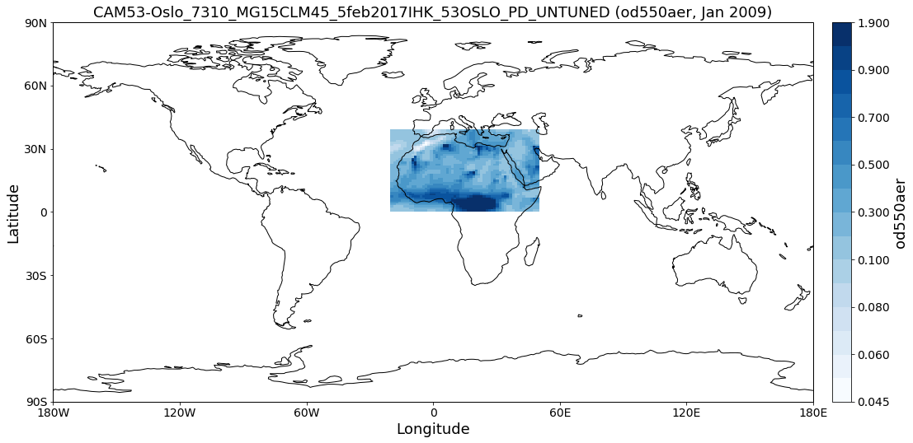
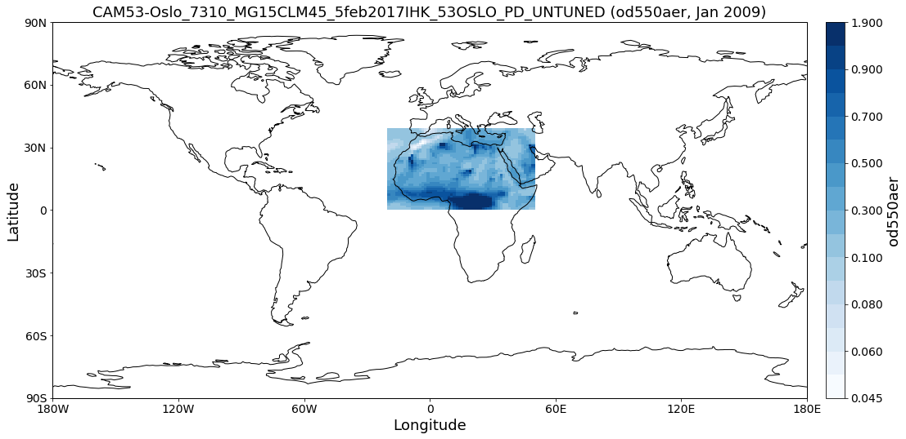

Tutorials (Jupyter Notebooks)¶
In this section you can find example tutorial notebooks for Pyaerocom.
Getting started¶
This notebook is meant to give a quick introduction into the main features and workflows of pyaerocom.
This includes brief introductions into the following features:
- Finding model and observation data on the AeroCom servers (method
browse_database). - Reading of gridded model data (
ReadGriddedclass). - Reading of ungridded observation data (
ReadUngriddedclass). - Working with gridded data (
GriddedDataclass). - Working with ungridded data (
UngriddedDataclass). - Retrieving and working with data from individual stations
(
StationDataclass). - Colocation of model data with all stations from an observation network.
It ends with a colocation of CAM53-Oslo model AODs both all-sky and clear-sky with Aeronet Sun V3 level 2 data.
Prerequisites¶
- In order to run this notebook, you need to be connected to the AeroCom post processing servers (PPI).
- If you have PPI (/lustre/) mounted on your local machine you need to
update the basic data directory after importing pyaerocom as follows:
import pyaerocom as pya pya.const.BASEDIR = <path_where_lustre_is_mounted>
Pyaerocom API flowchart (minimal)¶
The following flowchart illustrates the minimal workflow to create standard output in pyaerocom based on a user query (that typically comprises a model ID and observation ID as well as one (or more) variable(s) of interest (products indicated in red are not available yet, date of latest update: 4-10-2018).
from IPython.display import Image
flowchart = Image(filename=('../suppl/pyaerocom_basic_flowchart.png'))
flowchart

A user query typically comprises a model (+ experiment -> model run) and an observation network, which are supposed to be compared.
Note: the flowchart depicts a situation, where the data from the
observation network is ungridded, that is, the data is not available
in a gridded format such as NetCDF, but, for instance, in the form of
column seperated text files (as is the case for Aeronet data, which is
used as an example here and included in the test dataset). For
gridded observations (e.g. satellite data), the flowchart is
equivalent but with ReadGridded class and GriddedData for the
observation branch (and without caching).
This notebook illustrates and briefly discusses the individual aspects displayed in the flowchart.
import pyaerocom as pya
Initating pyaerocom configuration
Checking database access...
Checking access to: /lustre/storeA
Access to lustre database: True
Init data paths for lustre
Expired time: 0.018 s
Check data directory¶
By default, pyaerocom assumes that the AEROCOM database can be accessed (cf. top of flowchart), that is, it initiates all data query paths relative to the database server path names.
pya.const.BASEDIR
'/lustre/storeA/project/aerocom'
NOTE: Execution of the following lines will only work if you are connected to the AEROCOM data server or if you have access to the pyaerocom testdataset. The latter can be retrieved upon request (please contact jonasg@met.no).
Reading of and working with gridded model data (ReadGridded and GriddedData classes)¶
This section illustrates the reading of gridded data as well as some
features of the GriddedData class of pyaerocom. First, however, we
have to find a valid model ID for the reading (cf. flow chart).
Find model data¶
The database contains data from the CAM53-Oslo model, which is used in
the following. You can use the browse_database function of pyaerocom
to find model ID’s (which can be quite cryptic sometimes) using wildcard
pattern search.
pya.browse_database('CAM53*-Oslo*UNTUNED*')
Pyaerocom ReadGridded
---------------------
Model ID: CAM53-Oslo_7310_MG15CLM45_5feb2017IHK_53OSLO_PI_UNTUNED
Data directory: /lustre/storeA/project/aerocom/aerocom2/NorESM_SVN_TEST/CAM53-Oslo_7310_MG15CLM45_5feb2017IHK_53OSLO_PI_UNTUNED/renamed
Available variables: ['abs440aer', 'abs440aercs', 'abs500aer', 'abs5503Daer', 'abs550aer', 'abs550bc', 'abs550dryaer', 'abs550dust', 'abs550oa', 'abs550so4', 'abs550ss', 'abs670aer', 'abs870aer', 'airmass', 'area', 'asy3Daer', 'bc5503Daer', 'cheaqpso4', 'chegpso4', 'chepso2', 'cl3D', 'clt', 'drybc', 'drydms', 'drydust', 'dryoa', 'dryso2', 'dryso4', 'dryss', 'ec5503Daer', 'ec550dryaer', 'emibc', 'emidms', 'emidust', 'emioa', 'emiso2', 'emiso4', 'emiss', 'hus', 'landf', 'loadbc', 'loaddms', 'loaddust', 'loadoa', 'loadso2', 'loadso4', 'loadss', 'mmraerh2o', 'mmrbc', 'mmrdu', 'mmroa', 'mmrso4', 'mmrss', 'od440aer', 'od440csaer', 'od550aer', 'od550aerh2o', 'od550bc', 'od550csaer', 'od550dust', 'od550lt1aer', 'od550lt1dust', 'od550oa', 'od550so4', 'od550ss', 'od670aer', 'od870aer', 'od870csaer', 'orog', 'precip', 'pressure', 'ps', 'rlds', 'rlus', 'rlut', 'rlutcs', 'rsds', 'rsdscs', 'rsdt', 'rsus', 'rsut', 'sconcbc', 'sconcdms', 'sconcdust', 'sconcoa', 'sconcso2', 'sconcso4', 'sconcss', 'temp', 'vmrdms', 'vmrso2', 'wetbc', 'wetdms', 'wetdust', 'wetoa', 'wetso2', 'wetso4', 'wetss']
Available years: [9999]
Available time resolutions ['monthly']
Pyaerocom ReadGridded
---------------------
Model ID: CAM53-Oslo_7310_MG15CLM45_5feb2017IHK_53OSLO_PD_UNTUNED
Data directory: /lustre/storeA/project/aerocom/aerocom2/NorESM_SVN_TEST/CAM53-Oslo_7310_MG15CLM45_5feb2017IHK_53OSLO_PD_UNTUNED/renamed
Available variables: ['abs440aer', 'abs440aercs', 'abs500aer', 'abs5503Daer', 'abs550aer', 'abs550aercs', 'abs550bc', 'abs550dryaer', 'abs550dust', 'abs550oa', 'abs550so4', 'abs550ss', 'abs670aer', 'abs870aer', 'airmass', 'ang4487aer', 'ang4487csaer', 'area', 'asy3Daer', 'bc5503Daer', 'cheaqpso4', 'chegpso4', 'chepso2', 'cl3D', 'clt', 'drybc', 'drydms', 'drydust', 'dryoa', 'dryso2', 'dryso4', 'dryss', 'ec5503Daer', 'ec550dryaer', 'emibc', 'emidms', 'emidust', 'emioa', 'emiso2', 'emiso4', 'emiss', 'hus', 'landf', 'loadbc', 'loaddms', 'loaddust', 'loadoa', 'loadso2', 'loadso4', 'loadss', 'mmraerh2o', 'mmrbc', 'mmrdu', 'mmroa', 'mmrso4', 'mmrss', 'od440aer', 'od440csaer', 'od550aer', 'od550aerh2o', 'od550bc', 'od550csaer', 'od550dust', 'od550lt1aer', 'od550lt1dust', 'od550oa', 'od550so4', 'od550ss', 'od670aer', 'od870aer', 'od870csaer', 'orog', 'precip', 'pressure', 'ps', 'rlds', 'rlus', 'rlut', 'rlutcs', 'rsds', 'rsdscs', 'rsdt', 'rsus', 'rsut', 'sconcbc', 'sconcdms', 'sconcdust', 'sconcoa', 'sconcso2', 'sconcso4', 'sconcss', 'temp', 'vmrdms', 'vmrso2', 'wetbc', 'wetdms', 'wetdust', 'wetoa', 'wetso2', 'wetso4', 'wetss']
Available years: [2004, 2005, 2006, 2007, 2008, 2009, 2010, 9999]
Available time resolutions ['monthly']
Read Aerosol optical depth at 550 nm¶
Import both clear-sky (cs in variable name) and all-sky data.
import warnings
warnings.filterwarnings('ignore')
reader = pya.io.ReadGridded('CAM53-Oslo_7310_MG15CLM45_5feb2017IHK_53OSLO_PD_UNTUNED')
od550aer = reader.read_var('od550aer')
od550csaer = reader.read_var('od550csaer')
Both data objects are instances of class GriddedData which is based on the Cube class (iris library) and features very similar functionality and more.
Some of these features are introduced below.
Overview of what is in the data¶
Simply print the object.
print(od550aer)
pyaerocom.GriddedData: CAM53-Oslo_7310_MG15CLM45_5feb2017IHK_53OSLO_PD_UNTUNED
Grid data: Aerosol optical depth at 500nm / (1) (time: 84; latitude: 192; longitude: 288)
Dimension coordinates:
time x - -
latitude - x -
longitude - - x
Attributes:
Conventions: CF-1.0
NCO: 4.3.7
Version: $Name$
case: 53OSLO_PD_UNTUNED
history: Thu Feb 9 11:05:21 2017: ncatted -O -a units,od550aer,o,c,1 /projects/NS2345K/CAM-Oslo/DO_AEROCOM/CAM53-Oslo_7310_MG15CLM45_5feb2017IHK_53OSLO_PD_UNTUNED/renamed/aerocom3_CAM53-Oslo_7310_MG15CLM45_5feb2017IHK_53OSLO_PD_UNTUNED_od550aer_Column_2004_monthly.nc
Thu...
host: hexagon-2
initial_file: /work/shared/noresm/inputdata/atm/cam/inic/fv/cami-mam3_0000-01-01_0.9...
logname: ihkarset
nco_openmp_thread_number: 1
revision_Id: $Id$
source: CAM
title: UNSET
topography_file: /work/shared/noresm/inputdata/noresm-only/inputForNudging/ERA_f09f09_3...
Cell methods:
mean: time
print(od550csaer)
pyaerocom.GriddedData: CAM53-Oslo_7310_MG15CLM45_5feb2017IHK_53OSLO_PD_UNTUNED
Grid data: Clear air Aerosol optical depth at 550nm / (1) (time: 84; latitude: 192; longitude: 288)
Dimension coordinates:
time x - -
latitude - x -
longitude - - x
Attributes:
Conventions: CF-1.0
NCO: 4.3.7
Version: $Name$
case: 53OSLO_PD_UNTUNED
history: Thu Feb 9 11:05:16 2017: ncatted -O -a units,od550csaer,o,c,1 /projects/NS2345K/CAM-Oslo/DO_AEROCOM/CAM53-Oslo_7310_MG15CLM45_5feb2017IHK_53OSLO_PD_UNTUNED/renamed/aerocom3_CAM53-Oslo_7310_MG15CLM45_5feb2017IHK_53OSLO_PD_UNTUNED_od550csaer_Column_2004_monthly.nc
Thu...
host: hexagon-2
initial_file: /work/shared/noresm/inputdata/atm/cam/inic/fv/cami-mam3_0000-01-01_0.9...
logname: ihkarset
nco_openmp_thread_number: 1
revision_Id: $Id$
source: CAM
title: UNSET
topography_file: /work/shared/noresm/inputdata/noresm-only/inputForNudging/ERA_f09f09_3...
Cell methods:
mean: time
Access time stamps¶
Time stamps are represented as numerical values with respect to a
reference date and frequency, according to the CF conventions. They can
be accessed via the time attribute of the data class.
od550aer.time
DimCoord(array([ 0., 31., 60., 91., 121., 152., 182., 213., 244.,
274., 305., 335., 366., 397., 425., 456., 486., 517.,
547., 578., 609., 639., 670., 700., 731., 762., 790.,
821., 851., 882., 912., 943., 974., 1004., 1035., 1065.,
1096., 1127., 1155., 1186., 1216., 1247., 1277., 1308., 1339.,
1369., 1400., 1430., 1461., 1492., 1521., 1552., 1582., 1613.,
1643., 1674., 1705., 1735., 1766., 1796., 1827., 1858., 1886.,
1917., 1947., 1978., 2008., 2039., 2070., 2100., 2131., 2161.,
2192., 2223., 2251., 2282., 2312., 2343., 2373., 2404., 2435.,
2465., 2496., 2526.]), standard_name='time', units=Unit('days since 2004-01-01 00:00:00', calendar='gregorian'))
You may also want the time-stamps in the form of actual datetime-like
objects. These can be computed using the time_stamps() method:
od550aer.time_stamps()[0:3]
array(['2004-01-01T00:00:00.000000', '2004-02-01T00:00:00.000000',
'2004-03-01T00:00:00.000000'], dtype='datetime64[us]')
Plotting maps¶
Maps of individual time stamps can be plotted using the quickplot_map method.
fig1 = od550aer.quickplot_map('2009-3-15')
fig2 = od550csaer.quickplot_map('2009-3-15')
Filtering¶
Regional filtering can be performed using the Filter class (cf. flowchart above).
An overview of available default regions can be accessed via:
print(pya.region.get_all_default_region_ids())
['WORLD', 'EUROPE', 'ASIA', 'AUSTRALIA', 'CHINA', 'INDIA', 'NAFRICA', 'SAFRICA', 'SAMERICA', 'NAMERICA']
Now let’s go for north Africa. Create instance of Filter class:
f = pya.Filter('NAFRICA')
f
Filter([('_name', 'NAFRICA-wMOUNTAINS'),
('_region',
Region NAFRICA Region([('_name', 'NAFRICA'), ('lon_range', [-20, 50]), ('lat_range', [0, 40]), ('lon_range_plot', [-20, 50]), ('lat_range_plot', [0, 40]), ('lon_ticks', None), ('lat_ticks', None)])),
('lon_range', [-20, 50]),
('lat_range', [0, 40]),
('alt_range', None)])
… and apply to the two data objects (this can be done by calling the filter with the corresponding data class as input parameter):
od550aer_nafrica = f(od550aer)
od550csaer_nafrica = f(od550csaer)
Compare shapes:
od550aer_nafrica
pyaerocom.GriddedData
Grid data: <iris 'Cube' of Aerosol optical depth at 500nm / (1) (time: 84; latitude: 42; longitude: 57)>
od550aer
pyaerocom.GriddedData
Grid data: <iris 'Cube' of Aerosol optical depth at 500nm / (1) (time: 84; latitude: 192; longitude: 288)>
As you can see, the filtered object is reduced in the longitude and latitude dimension. Let’s plot the two new objects:
ax1 = od550aer_nafrica.quickplot_map('2009-3-15')
ax2 = od550csaer_nafrica.quickplot_map('2009-3-15')
Filtering of time¶
Filtering of time is not yet included in the Filter class but can be
easily performed from the GriddedData object directly. If you know
the indices of the time stamps you want to crop, you can simply use
numpy indexing syntax (remember that we have a 3D array containing time,
latitude and lonfgitude).
Let’s say we want to filter the year 2009.
Since the time dimension corresponds the first index in the 3D data (time, lat, lon), and since we know, that we have monthly data from 2008-2010 (see above), we may use
od550aer_nafrica_2009 = od550aer_nafrica[12:24]
od550aer_nafrica_2009.time_stamps()
array(['2005-01-01T00:00:00.000000', '2005-02-01T00:00:00.000000',
'2005-03-01T00:00:00.000000', '2005-04-01T00:00:00.000000',
'2005-05-01T00:00:00.000000', '2005-06-01T00:00:00.000000',
'2005-07-01T00:00:00.000000', '2005-08-01T00:00:00.000000',
'2005-09-01T00:00:00.000000', '2005-10-01T00:00:00.000000',
'2005-11-01T00:00:00.000000', '2005-12-01T00:00:00.000000'],
dtype='datetime64[us]')
in order to extract the year 2009.
However, this methodology might not always be handy (imagine you have a
10 year dataset of 3hourly sampled data and want to extract three
months in the 6th year …). In that case, you can perform the cropping
using the actual timestamps (for comparibility, let’s stick to 2009
here):
od550aer_nafrica_2009_alt = od550aer_nafrica.crop(time_range=('1-1-2009', '1-1-2010'))
od550aer_nafrica_2009.time_stamps()
array(['2005-01-01T00:00:00.000000', '2005-02-01T00:00:00.000000',
'2005-03-01T00:00:00.000000', '2005-04-01T00:00:00.000000',
'2005-05-01T00:00:00.000000', '2005-06-01T00:00:00.000000',
'2005-07-01T00:00:00.000000', '2005-08-01T00:00:00.000000',
'2005-09-01T00:00:00.000000', '2005-10-01T00:00:00.000000',
'2005-11-01T00:00:00.000000', '2005-12-01T00:00:00.000000'],
dtype='datetime64[us]')
Data aggregation¶
Let’s say we want to compute yearly means for each of the 3 years. In
this case we can simply call the downscale_time method:
od550aer_nafrica.downscale_time('yearly')
od550aer_nafrica.quickplot_map('2009')
This method is deprecated. Please use new name resample_time
 

Note: seasonal aggregation is not yet implemented in pyaerocom but will follow soon.
In the following section the reading of ungridded data is illustrated based on the example of AERONET version 3 (level 2) data. The test dataset contains a randomly picked subset of 100 Aeronet stations. Aeronet provides different products,
Reading of and working with ungridded data (ReadUngridded and UngriddedData classes)¶
Ungridded data in pyaerocom refers to data that is available in the form
of files per station and that is not sampled in a manner that it would
make sense to translate into a rgular gridded format such as the
previously introduced GriddedData class.
Data from the AERONET network (that is introduced in the following), for instance, is provided in the form of column seperated text files per measurement station, where columns correspond to different variables and data rows to individual time stamps. Needless to say that the time stamps (or the covered periods) vary from station to station.
The basic workflow for reading of ungridded data, such as Aeronet data, is very similar to the reading of gridded data (comprising a reading class that handles a query and returns a data class, here UngriddedData (see also flow chart above).
Before we can continue with the data import, some things need to be said
related to the caching of UngriddedData objects.
Caching of UngriddedData¶
Reading of ungridded data is often rather time-consuming. Therefore,
pyaerocom uses a caching strategy that stores loaded instances of the
UngriddedData class as pickle files in a cache directory
(illustrated in the left hand side of the flowchart shown above). The
loaction of the cache directory can be accessed via:
pya.const.CACHEDIR
'/home/jonasg/MyPyaerocom/_cache/jonasg'
You may change this directory if required.
print('Caching is active? {}'.format(pya.const.CACHING))
Caching is active? True
Deactivate caching
pya.const.CACHING = False
Activate caching
pya.const.CACHING = True
Note: if caching is active, make sure you have enough disk quota or change location where the files are stored.
Read Aeronet Sun v3 level 2 data¶
As illustrated in the flowchart above, ungridded observation data can be
imported using the ReadUngridded class. The reading class requires
an ID for the observation network that is supposed to be read. Let’s
find the right ID for these data:
pya.browse_database('Aeronet*V3*Lev2*')
Dataset name: AeronetSunV3Lev2.daily
Data directory: /lustre/storeA/project/aerocom/aerocom1/AEROCOM_OBSDATA/AeronetSunV3Lev2.0.daily/renamed
Supported variables: ['od340aer', 'od440aer', 'od500aer', 'od870aer', 'ang4487aer', 'ang4487aer_calc', 'od550aer']
Last revision: 20190311
Reading failed for AeronetSunV3Lev2.AP. Error: OSError('Data directory /lustre/storeA/project/aerocom/aerocom1/AEROCOM_OBSDATA/AeronetSunV3Lev2.0.AP/renamed of observation network AeronetSunV3Lev2.AP does not exists',)
Dataset name: AeronetSDAV3Lev2.daily
Data directory: /lustre/storeA/project/aerocom/aerocom1/AEROCOM_OBSDATA/Aeronet.SDA.V3L2.0.daily/renamed
Supported variables: ['od500gt1aer', 'od500lt1aer', 'od500aer', 'ang4487aer', 'od550aer', 'od550gt1aer', 'od550lt1aer']
Last revision: 20190402
Reading failed for AeronetSDAV3Lev2.AP. Error: NetworkNotImplemented('No reading class available yet for dataset AeronetSDAV3Lev2.AP',)
Dataset name: AeronetInvV3Lev2.daily
Data directory: /lustre/storeA/project/aerocom/aerocom1/AEROCOM_OBSDATA/Aeronet.Inv.V3L2.0.daily/renamed
Supported variables: ['abs440aer', 'angabs4487aer', 'od440aer', 'ang4487aer', 'abs550aer', 'od550aer']
Last revision: 20190330
It found one match and the dataset ID is AeronetSunV3Lev2.daily. It also tells us what variables can be loaded via the interface.
Note: You can safely ignore all the warnings in the output. These are due to the fact that the testdata set does not contain all observation networks that are available in the AEROCOM database.
obs_reader = pya.io.ReadUngridded('AeronetSunV3Lev2.daily')
print(obs_reader)
Dataset name: AeronetSunV3Lev2.daily
Data directory: /lustre/storeA/project/aerocom/aerocom1/AEROCOM_OBSDATA/AeronetSunV3Lev2.0.daily/renamed
Supported variables: ['od340aer', 'od440aer', 'od500aer', 'od870aer', 'ang4487aer', 'ang4487aer_calc', 'od550aer']
Last revision: 20190311
Let’s read the data (you can read a single or multiple variables at the same time). For now, we only read the AOD at 550 nm:
aeronet_data = obs_reader.read(vars_to_retrieve='od550aer')
type(aeronet_data) #displays data type
Found Cache match for AeronetSunV3Lev2.daily
pyaerocom.ungriddeddata.UngriddedData
As you can see, the data object is of type UngriddedData. Like the
GriddedData object, also the UngriddedData class has an
informative string representation (that can be printed):
print(aeronet_data)
Pyaerocom UngriddedData
-----------------------
Contains networks: ['AeronetSunV3Lev2.daily']
Contains variables: ['od550aer']
Contains instruments: ['sun_photometer']
Total no. of meta-blocks: 1206

Access of individual stations¶
Get all station names:
all_station_names = aeronet_data.unique_station_names
all_station_names[:10] #displays first 10 stations
['AAOT',
'AOE_Baotou',
'ARM_Ascension_Is',
'ARM_Barnstable_MA',
'ARM_Darwin',
'ARM_Gan_Island',
'ARM_Graciosa',
'ARM_Highlands_MA',
'ARM_HyytialaFinland',
'ARM_Macquarie_Is']
For instance, to access the data for the city of Leipzig, Germany, you can use square brackets with the station name of Leipzig:
station_data = aeronet_data['Leipzig'] # this is fully equivalent with aeronet_data.to_station_data('Leipzig')
type(station_data)
pyaerocom.stationdata.StationData
As you can see, the returned object is of type StationData, which is
one further data format of pyaerocom (note that this is not displayed in
the simplified flowchart above). StationData may be useful for
individual stations and is an extended Python dictionary (if you are
familiar with Python).
You may print it to see what is in there:
print(station_data)
Pyaerocom StationData
---------------------
var_info (BrowseDict([('od550aer', OrderedDict([('unit', '1'), ('overlap', False), ('ts_type', 'daily')]))]))
od550aer (<class 'collections.OrderedDict'>)
unit: 1
overlap: False
ts_type: daily
station_coords ({'latitude': 51.352500000000006, 'longitude': 12.435277999999998, 'altitude': 125.0})
latitude: 51.352500000000006
longitude: 12.435277999999998
altitude: 125.0
data_err (BrowseDict([('od550aer', array([nan, nan, nan, ..., nan, nan, nan]))]))
od550aer (array, 2894 items)
[nan
nan
...
nan
nan]
overlap:
filename: None
station_id: None
station_name: Leipzig
instrument_name: sun_photometer
PI: Brent_Holben
country: None
ts_type: daily
latitude: 51.352500000000006
longitude: 12.435277999999998
altitude: 125.0
data_id: AeronetSunV3Lev2.daily
dataset_name: None
data_product: None
data_version: None
data_level: None
revision_date: None
ts_type_src: daily
stat_merge_pref_attr: None
data_revision: 20190311
Data arrays
.................
dtime (array, 6364 items)
[numpy.datetime64('2001-05-20T00:00:00.000000000')
numpy.datetime64('2001-05-21T00:00:00.000000000')
...
numpy.datetime64('2018-10-20T00:00:00.000000000')
numpy.datetime64('2018-10-21T00:00:00.000000000')]
Pandas Series
.................
od550aer (Series, 6364 items)
As you can see, this station contains a time-series of the AOD at 550 nm. If you like, you can plot this time-series:
ax = station_data.insert_nans_timeseries('od550aer').plot_timeseries('od550aer', marker='x', ls='none')
station_data.plot_timeseries('od550aer', freq='monthly', marker=' ', ls='-', lw=3, ax=ax)
<matplotlib.axes._subplots.AxesSubplot at 0x7f2d478582e8>
You can also retrieve the StationData with specifying more
constraints using to_station_data (e.g. in monthly resolution and
only for the year 2010). And you can overlay different curves, by
passing the axes instance returned by the plotting method:
ax=aeronet_data.to_station_data('Leipzig',
start=2010,
freq='daily').plot_timeseries('od550aer')
ax=aeronet_data.to_station_data('Leipzig',
start=2010,
freq='monthly').plot_timeseries('od550aer', ax=ax)
ax.legend()
ax.set_title('Leipzig AODs 2010')
Text(0.5, 1.0, 'Leipzig AODs 2010')

You can also plot the time-series directly¶
For instance, if you want to do an air-quality check for you next bouldering trip, you may call:
ts = aeronet_data.to_station_data('Fontainebleau', 'od550aer', 2006, None, 'monthly')
ts
StationData([('dtime',
array(['2006-01-15T00:00:00.000000000', '2006-02-15T00:00:00.000000000',
'2006-03-15T00:00:00.000000000', '2006-04-15T00:00:00.000000000',
'2006-05-15T00:00:00.000000000', '2006-06-15T00:00:00.000000000',
'2006-07-15T00:00:00.000000000', '2006-08-15T00:00:00.000000000',
'2006-09-15T00:00:00.000000000', '2006-10-15T00:00:00.000000000',
'2006-11-15T00:00:00.000000000', '2006-12-15T00:00:00.000000000'],
dtype='datetime64[ns]')),
('var_info',
BrowseDict([('od550aer',
OrderedDict([('unit', '1'),
('overlap', False),
('ts_type', 'monthly')]))])),
('station_coords',
{'latitude': 48.406666999999985,
'longitude': 2.6802780000000004,
'altitude': 85.0}),
('data_err',
BrowseDict([('od550aer',
array([nan, nan, nan, nan, nan, nan, nan, nan, nan, nan, nan, nan, nan,
nan, nan, nan, nan, nan, nan, nan, nan, nan, nan, nan, nan, nan,
nan, nan, nan, nan, nan, nan, nan, nan, nan, nan, nan, nan, nan,
nan, nan, nan, nan, nan, nan, nan, nan, nan, nan, nan, nan, nan,
nan, nan, nan, nan, nan, nan, nan, nan, nan, nan, nan, nan, nan,
nan, nan, nan, nan, nan, nan, nan, nan, nan, nan, nan, nan, nan,
nan, nan, nan, nan, nan, nan, nan, nan, nan, nan, nan, nan, nan,
nan, nan, nan, nan, nan, nan, nan, nan, nan, nan, nan, nan, nan,
nan, nan, nan, nan, nan, nan, nan, nan, nan, nan, nan, nan, nan,
nan, nan, nan, nan, nan, nan, nan, nan, nan, nan, nan, nan, nan,
nan, nan, nan, nan, nan, nan, nan, nan, nan, nan, nan, nan, nan,
nan, nan, nan, nan, nan, nan, nan, nan, nan, nan, nan, nan, nan,
nan, nan, nan, nan, nan, nan, nan, nan, nan, nan, nan, nan, nan,
nan, nan, nan, nan, nan, nan, nan, nan, nan, nan, nan, nan, nan,
nan, nan, nan, nan, nan, nan, nan, nan, nan, nan, nan, nan, nan,
nan, nan, nan]))])),
('overlap', BrowseDict()),
('filename', None),
('station_id', None),
('station_name', 'Fontainebleau'),
('instrument_name', 'sun_photometer'),
('PI', 'Brent_Holben'),
('country', None),
('ts_type', 'monthly'),
('latitude', 48.406666999999985),
('longitude', 2.6802780000000004),
('altitude', 85.0),
('data_id', 'AeronetSunV3Lev2.daily'),
('dataset_name', None),
('data_product', None),
('data_version', None),
('data_level', None),
('revision_date', None),
('ts_type_src', 'daily'),
('stat_merge_pref_attr', None),
('data_revision', '20190311'),
('od550aer', 2006-01-15 0.176742
2006-02-15 0.176013
2006-03-15 0.252403
2006-04-15 0.195318
2006-05-15 0.215357
2006-06-15 0.195586
2006-07-15 0.224991
2006-08-15 0.131814
2006-09-15 0.151338
2006-10-15 0.141222
2006-11-15 0.088815
2006-12-15 0.106992
dtype: float64)])
aeronet_data.plot_station_timeseries('Fontainebleau', 'od550aer', ts_type='monthly',
start=2006).set_title('AOD in Fontainebleau, 2006')
Text(0.5, 1.0, 'AOD in Fontainebleau, 2006')
Seems like November is a good time (maybe a bit rainy though)
Colocation of model and obsdata¶
Now that we have different data objects loaded we can continue with colocation. In the following, both the all-sky and the clear-sky data from CAM53-Oslo will be colocated with the subset of Aeronet stations that we just loaded.
The colocation will be performed for the year of 2010 and two scatter plots will be created.
You have also the option to apply a certain filter when colocating using a valid filter name. Here, we use global data and exclude mountain sides.
col_all_sky_glob = pya.colocation.colocate_gridded_ungridded(od550aer, aeronet_data,
ts_type='monthly',
start=2010,
filter_name='WORLD-noMOUNTAINS')
type(col_all_sky_glob)
This method is deprecated. Please use new name resample_time
Setting od550aer outlier lower lim: -1.00
Setting od550aer outlier upper lim: 10.00
Interpolating data of shape (12, 192, 288). This may take a while.
Successfully interpolated cube
pyaerocom.colocateddata.ColocatedData
Let’s do the same for the clear-sky data.
col_clear_sky_glob = pya.colocation.colocate_gridded_ungridded(od550csaer, aeronet_data,
ts_type='monthly',
start=2010,
filter_name='WORLD-noMOUNTAINS')
type(col_clear_sky_glob)
This method is deprecated. Please use new name resample_time
Setting od550aer outlier lower lim: -1.00
Setting od550aer outlier upper lim: 10.00
Interpolating data of shape (12, 192, 288). This may take a while.
Successfully interpolated cube
pyaerocom.colocateddata.ColocatedData
ax1 = col_all_sky_glob.plot_scatter()
ax1.set_title('All sky (2010, monthly)');

ax2 = col_clear_sky_glob.plot_scatter()
ax2.set_title('Clear sky (2010, monthly)');

… or for EUROPE:
pya.colocation.colocate_gridded_ungridded(od550aer, aeronet_data,
ts_type='monthly',
start=2010,
filter_name='EUROPE-noMOUNTAINS').plot_scatter();
This method is deprecated. Please use new name resample_time
Setting od550aer outlier lower lim: -1.00
Setting od550aer outlier upper lim: 10.00
Interpolating data of shape (12, 192, 288). This may take a while.
Successfully interpolated cube
Remark on the ColocatedData object¶
The ColocatedData object has not many features and methods
implemented yet. But it builds a good basis for further analysis using
features of the underlying data-structure, which is an instance of the
xarray.DataArray
class and can be accessed via the data attribute if the
ColocatedData object:
arr = col_all_sky_glob.data
type(arr)
xarray.core.dataarray.DataArray
You may want to read more about it here.
AEROCOM default regions¶
This notebook introduces how pya handles information related to default regions (e.g. Europe, Asia, …) as used in the AEROCOM interface. All default regions are defined in the file regions.ini.
import pyaerocom as pya
pya.region.all()
Initating pyaerocom configuration
Checking database access...
Checking access to: /lustre/storeA
Access to lustre database: True
Init data paths for lustre
Expired time: 0.021 s
['WORLD',
'EUROPE',
'ASIA',
'AUSTRALIA',
'CHINA',
'INDIA',
'NAFRICA',
'SAFRICA',
'SAMERICA',
'NAMERICA']
These region IDs can be used to access more information about the regions (which is used throughout pyaerocom). For instance:
europe = pya.Region("EUROPE")
print(europe)
pyaeorocom Region
Name: EUROPE
Longitude range: [-20, 70]
Latitude range: [30, 80]
Longitude range (plots): [-20, 70]
Latitude range (plots): [30, 80]
asia = pya.Region("ASIA")
print(asia)
pyaeorocom Region
Name: ASIA
Longitude range: [40, 150]
Latitude range: [0, 60]
Longitude range (plots): [40, 150]
Latitude range (plots): [0, 60]
Load example data and apply region specific crop¶
In the following cell, we create an instance of the GriddedData
class (hich is introduced in more detail in a later tutorial), load some
test data (from the CAMS ECMWF OSUITE dataset), crop it and plot a map
of the results over Europe.
data = pya.GriddedData()
data._init_testdata_default()
crop = data.crop(region="EUROPE")
fig = crop.quickplot_map()
/home/jonasg/anaconda3/lib/python3.6/site-packages/iris/fileformats/_pyke_rules/compiled_krb/fc_rules_cf_fc.py:1932: UserWarning: Ignoring netCDF variable 'od550so4' invalid units '~'
warnings.warn(msg)
/home/jonasg/anaconda3/lib/python3.6/site-packages/iris/fileformats/_pyke_rules/compiled_krb/fc_rules_cf_fc.py:1932: UserWarning: Ignoring netCDF variable 'od550dust' invalid units '~'
warnings.warn(msg)
/home/jonasg/anaconda3/lib/python3.6/site-packages/iris/fileformats/_pyke_rules/compiled_krb/fc_rules_cf_fc.py:1932: UserWarning: Ignoring netCDF variable 'od550oa' invalid units '~'
warnings.warn(msg)
/home/jonasg/anaconda3/lib/python3.6/site-packages/iris/fileformats/_pyke_rules/compiled_krb/fc_rules_cf_fc.py:1932: UserWarning: Ignoring netCDF variable 'od550bc' invalid units '~'
warnings.warn(msg)
/home/jonasg/anaconda3/lib/python3.6/site-packages/iris/fileformats/_pyke_rules/compiled_krb/fc_rules_cf_fc.py:1932: UserWarning: Ignoring netCDF variable 'od550aer' invalid units '~'
warnings.warn(msg)
That’s it. Not much more to say about regions until now.
Reading of gridded data - the ReadGridded class¶
This notebook introduces the ReadGridded class of pyaerocom, a flexible interface for importing model results from a single model, based on variable name (e.g. od550aer, od550bc), start / stop time stamps and temporal resolution (e.g. hourly, 3hourly, daily, monthly).
The class is part of the readgridded module of pyaerocom, as well as the class ReadGriddedMulti, which is introduced in the following tutorial (may be skipped).
In the following, we create an instance of the the ReadGridded class
and use this object to find and import data files containing the aerosol
optical depth at 550 nm (od550aer) from the ECMWF CAMS reanalysis
dataset (ECMWF_CAMS_REAN) for the years 2003-2007 and in daily
resolution. The files will be temporally merged and put into a single
instance of the GriddedData class.
We start with creating a reading object, that will take care of finding
the model directory for us (based on the model ID) and all valid NetCDF
files on initialisation. Use the print commant to preview the string
representation of ReadGridded object, which provides useful
information about what is in there.
Remark on reading of gridded data¶
Since model data files can be large (too large for in-memory operations), gridded data in pyaerocom (e.g. model data or satellite data) is generally read and represented as lazy data. That means, that the actual N-dimensional data array is not loaded into memory before needed. Lazy data is represented as [dask array] as pyaerocom data objects rely either on the Python iris library or xarray (which both use dask for representing lazy data and for out of core computation). For more information on lazy data, see e.g. https://scitools.org.uk/iris/docs/latest/userguide/real_and_lazy_data.html.
Example: Consider one year of daily model data in 1x1 resolution with 30 vertical layers, stored as 64 bit floating point numbers. Loading such a file into memory, would require a RAM of at least:
'{:.1f} GB'.format(64 * (360 * 180) * 30 * 365 / (8 * 10**9))
'5.7 GB'
Or the same in hourly resolution:
'{:.1f} GB'.format(64 * (360 * 180) * 30 * 365 * 24 / (8 * 10**9))
'136.2 GB'
import pyaerocom as pya
pya.change_verbosity('critical')
read = pya.io.ReadGridded(data_id="ECMWF_CAMS_REAN",
start="1-1-2003",
stop="31-12-2007")
print(read)
Initating pyaerocom configuration
Checking database access...
Checking access to: /lustre/storeA
Access to lustre database: True
Init data paths for lustre
Expired time: 0.021 s
Pyaerocom ReadGridded
---------------------
Model ID: ECMWF_CAMS_REAN
Data directory: /lustre/storeA/project/aerocom/aerocom-users-database/ECMWF/ECMWF_CAMS_REAN/renamed
Available variables: ['ang4487aer', 'bscatc532aerboa', 'bscatc532aertoa', 'ec532aer', 'od440aer', 'od550aer', 'od550bc', 'od550dust', 'od550oa', 'od550so4', 'od550ss', 'od865aer', 'sconcpm10', 'sconcpm25', 'z']
Available years: [2003, 2004, 2005, 2006, 2007, 2008]
Available time resolutions ['daily', 'monthly']
The output contains information about all variables that were found and all corresponding years. These information is extracted from the filenames, which have to follow the AEROCOM file naming conventions.
Please note that at this point, no data is actually imported but
only the paths are set that contain data for this model. In order to
read one variable, call the read_var function with a valid variable
name. You can check available variables using the vars attribute (or
by printing the string representation, as shown in the cell above).
print("Detected variables for model %s:\n %s" %(read.data_id, read.vars))
Detected variables for model ECMWF_CAMS_REAN:
['ang4487aer', 'bscatc532aerboa', 'bscatc532aertoa', 'ec532aer', 'od440aer', 'od550aer', 'od550bc', 'od550dust', 'od550oa', 'od550so4', 'od550ss', 'od865aer', 'sconcpm10', 'sconcpm25', 'z']
data = read.read_var(var_name="od550aer", ts_type="daily")
data
pyaerocom.GriddedData
Grid data: <iris 'Cube' of Aerosol optical depth at 550 nm / (1) (time: 1826; latitude: 161; longitude: 320)>
The returned data object is of type
GriddedData
class, which will be introduced in more detail later. This data object
is returned by the read_var method and can also be accessed from the
instance of the reading class using:
d = read.data["od550aer"]
d is data #?
True
We may also import other variables using either the above used method
read_var or the more general read method which can read single
or multiple variables on the run.
read.read(['od550bc', 'od550dust', 'od550oa', 'od550so4'])
(pyaerocom.GriddedData
Grid data: <iris 'Cube' of Aerosol optical depth at 550 nm / (1) (time: 1826; latitude: 161; longitude: 320)>,
pyaerocom.GriddedData
Grid data: <iris 'Cube' of Aerosol optical depth at 550 nm / (1) (time: 1826; latitude: 161; longitude: 320)>,
pyaerocom.GriddedData
Grid data: <iris 'Cube' of Aerosol optical depth at 550 nm / (1) (time: 1826; latitude: 161; longitude: 320)>,
pyaerocom.GriddedData
Grid data: <iris 'Cube' of Aerosol optical depth at 550 nm / (1) (time: 1826; latitude: 161; longitude: 320)>)
Now let’s double check if all variables have been imported.
print(read)
Pyaerocom ReadGridded
---------------------
Model ID: ECMWF_CAMS_REAN
Data directory: /lustre/storeA/project/aerocom/aerocom-users-database/ECMWF/ECMWF_CAMS_REAN/renamed
Available variables: ['ang4487aer', 'bscatc532aerboa', 'bscatc532aertoa', 'ec532aer', 'od440aer', 'od550aer', 'od550bc', 'od550dust', 'od550oa', 'od550so4', 'od550ss', 'od865aer', 'sconcpm10', 'sconcpm25', 'z']
Available years: [2003, 2004, 2005, 2006, 2007, 2008]
Available time resolutions ['daily', 'monthly']
Loaded GriddedData objects:
Pyaerocom GriddedData
---------------------
Variable: od550aer
Temporal resolution: daily
Start / Stop: 2003-01-01T00:00:00.000000 - 2007-12-31T23:59:59.999999
Pyaerocom GriddedData
---------------------
Variable: od550bc
Temporal resolution: daily
Start / Stop: 2003-01-01T00:00:00.000000 - 2007-12-31T23:59:59.999999
Pyaerocom GriddedData
---------------------
Variable: od550dust
Temporal resolution: daily
Start / Stop: 2003-01-01T00:00:00.000000 - 2007-12-31T23:59:59.999999
Pyaerocom GriddedData
---------------------
Variable: od550oa
Temporal resolution: daily
Start / Stop: 2003-01-01T00:00:00.000000 - 2007-12-31T23:59:59.999999
Pyaerocom GriddedData
---------------------
Variable: od550so4
Temporal resolution: daily
Start / Stop: 2003-01-01T00:00:00.000000 - 2007-12-31T23:59:59.999999
In the following we continue with the od550aer data object that was
loaded first and that was assigned the name data above.
print("\nThe data object is of type %s and contains %d time stamps" %(type(data), data.shape[0]))
The data object is of type <class 'pyaerocom.griddeddata.GriddedData'> and contains 1826 time stamps
The returned GriddedData object contains 1826 time stamps. Given that the defined period of 5 years includes one leap year, we should expect that we imported data for each day of the five years?
print(1826 == 5*365+1)
True
Remark on time definition¶
If you run this notebook with verbose=True in the reading object,
you will receive the output
Error message: AttributeError('Cube does not contain time dimension',) Invalid time axis in file ECMWF_CAMS_REAN.daily.od550aer.2007.nc. Attempting to correct.
several times when reading the data. This warning indicates, that the corresponding data in the netCDF files has some issue with the time dimension. Here, the time variable is not properly defined in the NetCDF file. Pyaerocom can correct for this on data import by
- First checking if the time dimension in the NetCDF file is correct according to CF convention (see here for details on the implementation and if a problem is detected, then …
- the time axis is redefined based on the year and time resolution (ts_type) that is encrypted in the filename. The latter requires that the file follows one of the pyaerocom file conventions.
A very brief introduction into the GriddedData class¶
Now as a final step, we briefly introduce some of the features of the
GriddedData class by computing and plotting a time series of the
global weighted average aerosol optical density as well as the same time
series at the coordinates in the city of Leipzig, Germany.
from pandas import Series
from scipy.ndimage import gaussian_filter1d
#compute global mean (area weighted)
glob_mean = data.area_weighted_mean()
#extract AODs at the position of Leipzig
lon_leipzig = 12.44
lat_leipzig = 51.35
data_leipzig = data.interpolate([("latitude", lat_leipzig),
("longitude", lon_leipzig)])
# create pandas Series for global average
s_glob = Series(glob_mean, index=data.time_stamps())
# create pandas Series for leipzig average (and smooth in time)
GAUSS_SIGMA = 3
s_leipzig = Series(gaussian_filter1d(data_leipzig.grid.data, GAUSS_SIGMA),
data_leipzig.time_stamps())
ax = s_leipzig.plot(label=r"City of Leipzig (smoothed $\sigma$=%d)" %GAUSS_SIGMA, figsize=(14,5))
s_glob.plot(label="Global trend", ax=ax)
ax.legend()
tit = ax.set_title("AOD @ 550nm")
/home/jonasg/anaconda3/lib/python3.6/site-packages/iris/analysis/cartography.py:394: UserWarning: Using DEFAULT_SPHERICAL_EARTH_RADIUS.
warnings.warn("Using DEFAULT_SPHERICAL_EARTH_RADIUS.")
Interpolating data of shape (1826, 161, 320). This may take a while.
Successfully interpolated cube

In the following section, the ReadGriddedMulti class is introduced,
which is largely based on the ReadGridded class and allows for
importing data from multiple models.
Reading data from multiple models: the ReadGriddedMulti class¶
The pyaerocom.ReadGriddedMulti class provides an interface to import
multiple variables for an arbitrary number of gridded datasets
(e.g. model data, level 2 satellite data) and within a specific time
interval. It makes large use of the ReadGridded class that provides
an interface for importing results from a single dataset (and that does
the actual reading).
Note: This is not strictly relevant for the following tutorials. You might skip this tutorial if it is not of particular interest for you to read multiple models at once.
import os
import pyaerocom as pya
pya.change_verbosity('critical')
Initating pyaerocom configuration
Checking database access...
Checking access to: /lustre/storeA
Access to lustre database: True
Init data paths for lustre
Expired time: 0.017 s
Define two models (this list can contain as many models as you like)
models = ["AATSR_SU_v4.3", "CAM5.3-Oslo_CTRL2016"]
Again, if you are not sure what is the exact name of the dataset you are searching for, you may use wildcards to search for options. For instance, if you want to include results from the implementation of the sectional aerosol microphysics module (SALSA) in the ECHAM5-HAM aerosol-climate model, you may search if data exists …
try:
pya.search_data_dir_aerocom("*ECHAM*salsa*CTRL*2015")
except Exception as e:
print(repr(e))
… and include it:
models.append('ECHAM6-SALSA_AP3-CTRL2015')
Now create and initiate ReadGriddedMulti class. The directory for
each model as well as all valid files in the model directories are
searched on initiation of the instance. Valid here means, that the files
belong to the corresponding model. Subsetting of the time interval is
done in a later process.
read = pya.io.ReadGriddedMulti(models, '2010','2011')
print(read)
Pyaerocom ReadGriddedMulti
--------------------------
Model IDs: ['AATSR_SU_v4.3', 'CAM5.3-Oslo_CTRL2016', 'ECHAM6-SALSA_AP3-CTRL2015']
Loaded data:
Pyaerocom ReadGridded
---------------------
Model ID: AATSR_SU_v4.3
Data directory: /lustre/storeA/project/aerocom/aerocom-users-database/CCI-Aerosol/CCI_AEROSOL_Phase2/AATSR_SU_v4.3/renamed
Available variables: ['abs550aer', 'ang4487aer', 'od550aer', 'od550dust', 'od550erraer', 'od550gt1aer', 'od550lt1aer']
Available years: [2010, 2011, 2012]
Available time resolutions ['daily']
Pyaerocom ReadGridded
---------------------
Model ID: CAM5.3-Oslo_CTRL2016
Data directory: /lustre/storeA/project/aerocom/aerocom-users-database/AEROCOM-PHASE-III/CAM5.3-Oslo_CTRL2016/renamed
Available variables: ['abs550aer', 'deltaz3d', 'humidity3d', 'od440aer', 'od550aer', 'od550aer3d', 'od550aerh2o', 'od550dryaer', 'od550dust', 'od550lt1aer', 'od870aer']
Available years: [2010]
Available time resolutions ['3hourly', 'daily']
Pyaerocom ReadGridded
---------------------
Model ID: ECHAM6-SALSA_AP3-CTRL2015
Data directory: /lustre/storeA/project/aerocom/aerocom-users-database/AEROCOM-PHASE-III/ECHAM6-SALSA_AP3-CTRL2015/renamed
Available variables: ['depbc', 'depdust', 'depoa', 'depso4', 'depss', 'emibc', 'emidms', 'emidust', 'emiso2', 'emiso4', 'emiss', 'emivoc', 'emivoct', 'loadbc', 'loaddust', 'loadoa', 'loadso4', 'loadss', 'od550aer', 'od550bc', 'od550dust', 'od550oa', 'od550so4', 'od550ss', 'sconcbc', 'sconcdust', 'sconcoa', 'sconcso4', 'sconcss']
Available years: [2010]
Available time resolutions ['monthly']
As you can see, the 3 different instances of the ReadGridded class
were created (which was introduced in the previous tutorial), one for
each of the 3 requested datasets. These can be used to access the data
for each of the datasets.
Let’s define a bunch of test variables that are supposed to be loaded for each model.
test_vars = ["od550aer", "od550dust"]
Read all variables for all models
result_dict = read.read(test_vars, ts_type="daily")
As we can see, for the ECHAM6 data, the import failed. The reason for this is, that these data only exists in monthly resolution. We can load these data manually.
r = read["ECHAM6-SALSA_AP3-CTRL2015"]
r.vars
['depbc',
'depdust',
'depoa',
'depso4',
'depss',
'emibc',
'emidms',
'emidust',
'emiso2',
'emiso4',
'emiss',
'emivoc',
'emivoct',
'loadbc',
'loaddust',
'loadoa',
'loadso4',
'loadss',
'od550aer',
'od550bc',
'od550dust',
'od550oa',
'od550so4',
'od550ss',
'sconcbc',
'sconcdust',
'sconcoa',
'sconcso4',
'sconcss']
Now read the aerosol optical depth at 550 nm and in monthly resolution.
r.read_var("od550aer", ts_type="monthly")
pyaerocom.GriddedData
Grid data: <iris 'Cube' of atmosphere_optical_thickness_due_to_ambient_aerosol_particles / (1) (time: 12; latitude: 96; longitude: 192)>
Print what is in there (similar to the previously introduced
ReadGridded class, also the ReadGriddedMulti class has a helpful
string representation)
print(read)
Pyaerocom ReadGriddedMulti
--------------------------
Model IDs: ['AATSR_SU_v4.3', 'CAM5.3-Oslo_CTRL2016', 'ECHAM6-SALSA_AP3-CTRL2015']
Loaded data:
Pyaerocom ReadGridded
---------------------
Model ID: AATSR_SU_v4.3
Data directory: /lustre/storeA/project/aerocom/aerocom-users-database/CCI-Aerosol/CCI_AEROSOL_Phase2/AATSR_SU_v4.3/renamed
Available variables: ['abs550aer', 'ang4487aer', 'od550aer', 'od550dust', 'od550erraer', 'od550gt1aer', 'od550lt1aer']
Available years: [2010, 2011, 2012]
Available time resolutions ['daily']
Loaded GriddedData objects:
Pyaerocom GriddedData
---------------------
Variable: od550aer
Temporal resolution: daily
Start / Stop: 2010-01-01T00:00:00.000000 - 2011-01-01T23:59:59.999999
Pyaerocom GriddedData
---------------------
Variable: od550dust
Temporal resolution: daily
Start / Stop: 2010-01-01T00:00:00.000000 - 2011-01-01T23:59:59.999999
Pyaerocom ReadGridded
---------------------
Model ID: CAM5.3-Oslo_CTRL2016
Data directory: /lustre/storeA/project/aerocom/aerocom-users-database/AEROCOM-PHASE-III/CAM5.3-Oslo_CTRL2016/renamed
Available variables: ['abs550aer', 'deltaz3d', 'humidity3d', 'od440aer', 'od550aer', 'od550aer3d', 'od550aerh2o', 'od550dryaer', 'od550dust', 'od550lt1aer', 'od870aer']
Available years: [2010]
Available time resolutions ['3hourly', 'daily']
Loaded GriddedData objects:
Pyaerocom GriddedData
---------------------
Variable: od550aer
Temporal resolution: daily
Start / Stop: 2010-01-01T00:00:00.000000 - 2010-12-31T23:59:59.999999
Pyaerocom GriddedData
---------------------
Variable: od550dust
Temporal resolution: daily
Start / Stop: 2010-01-01T00:00:00.000000 - 2010-12-31T23:59:59.999999
Pyaerocom ReadGridded
---------------------
Model ID: ECHAM6-SALSA_AP3-CTRL2015
Data directory: /lustre/storeA/project/aerocom/aerocom-users-database/AEROCOM-PHASE-III/ECHAM6-SALSA_AP3-CTRL2015/renamed
Available variables: ['depbc', 'depdust', 'depoa', 'depso4', 'depss', 'emibc', 'emidms', 'emidust', 'emiso2', 'emiso4', 'emiss', 'emivoc', 'emivoct', 'loadbc', 'loaddust', 'loadoa', 'loadso4', 'loadss', 'od550aer', 'od550bc', 'od550dust', 'od550oa', 'od550so4', 'od550ss', 'sconcbc', 'sconcdust', 'sconcoa', 'sconcso4', 'sconcss']
Available years: [2010]
Available time resolutions ['monthly']
Loaded GriddedData objects:
Pyaerocom GriddedData
---------------------
Variable: od550aer
Temporal resolution: monthly
Start / Stop: 2010-01-01T00:00:00.000000 - 2010-12-31T23:59:59.999999
Pyaerocom GriddedData
---------------------
Variable: od550dust
Temporal resolution: monthly
Start / Stop: 2010-01-01T00:00:00.000000 - 2010-12-31T23:59:59.999999
Print some information about the different data objects
for name, result in read.results.items():
print("Current model: %s" %name)
for var_name, data in result.data.items():
print("\nCurrent variable: %s" %var_name)
# data is of type pya.GriddedData which uses an extended representation of the Cube class
print(repr(data))
Current model: AATSR_SU_v4.3
Current variable: od550aer
pyaerocom.GriddedData
Grid data: <iris 'Cube' of atmosphere_optical_thickness_due_to_ambient_aerosol / (1) (time: 366; latitude: 180; longitude: 360)>
Current variable: od550dust
pyaerocom.GriddedData
Grid data: <iris 'Cube' of atmosphere_optical_thickness_due_to_ambient_aerosol / (1) (time: 366; latitude: 180; longitude: 360)>
Current model: CAM5.3-Oslo_CTRL2016
Current variable: od550aer
pyaerocom.GriddedData
Grid data: <iris 'Cube' of Aerosol optical depth at 550nm / (1) (time: 365; latitude: 192; longitude: 288)>
Current variable: od550dust
pyaerocom.GriddedData
Grid data: <iris 'Cube' of mineral aerosol optical depth 550nm / (1) (time: 365; latitude: 192; longitude: 288)>
Current model: ECHAM6-SALSA_AP3-CTRL2015
Current variable: od550aer
pyaerocom.GriddedData
Grid data: <iris 'Cube' of atmosphere_optical_thickness_due_to_ambient_aerosol_particles / (1) (time: 12; latitude: 96; longitude: 192)>
Current variable: od550dust
pyaerocom.GriddedData
Grid data: <iris 'Cube' of atmosphere_optical_thickness_due_to_dust_ambient_aerosol_particles / (1) (time: 12; latitude: 96; longitude: 192)>
Now get and arbitrarily crop the CAM5.3-Oslo_CTRL2016 data object containing the od550aer values and draw a map.
data = read["CAM5.3-Oslo_CTRL2016"]["od550aer"]
print("\nStart / stop before crop: %s - %s\n"
%(data.start,
data.stop))
dat_crop = data.crop(lon_range=(-30, 30),
lat_range=(0, 45),
time_range=('15 March 2010','22 June 2010'))
print("Start / stop after crop: %s - %s"
%(dat_crop.grid.coord("time").cell(0).point,
dat_crop.grid.coord("time").cell(-1).point))
Start / stop before crop: 2010-01-01T00:00:00.000000 - 2010-12-31T23:59:59.999999
Start / stop after crop: 2010-03-15 10:30:00 - 2010-06-22 10:30:00
Plot a map of the first day.
fig = dat_crop.quickplot_map()

Iterate over models and variables¶
The following cell iterates over all imported variables and models and plots the first time stamp of each result file.
for name, result in read.results.items():
for var_name, model_data in result.data.items():
fig = model_data.quickplot_map()


Introducing the GriddedData class¶
This notebook introduces basic features of the
GriddedData
class of pyaerocom. The GriddedData class is the fundamental base
class for the analysis of model data. The underlying data type is
iris.cube.Cube
which was extended, for instance by allowing direct imports of netCDF
files when creating an instance of GriddedData (i.e. by passing the
filename and specifying the variable name on initialisation). This
notebook introduces some of the features of the GriddedData class.
Starting with some imports…
import pyaerocom as pya
from warnings import filterwarnings
filterwarnings('ignore')
pya.change_verbosity('critical')
Initating pyaerocom configuration
Checking database access...
Checking access to: /lustre/storeA
Access to lustre database: True
Init data paths for lustre
Expired time: 0.017 s
Let’s get a test file to load
test_files = pya.io.testfiles.get()
for name, filepath in test_files["models"].items(): print("%s\n%s\n" %(name, filepath))
aatsr_su_v4.3
/lustre/storeA/project/aerocom/aerocom-users-database/CCI-Aerosol/CCI_AEROSOL_Phase2/AATSR_SU_v4.3/renamed/aerocom.AATSR_SU_v4.3.daily.od550aer.2008.nc
ecmwf_osuite
/lustre/storeA/project/aerocom/aerocom1/ECMWF_OSUITE_NRT_test/renamed/aerocom.ECMWF_OSUITE_NRT_test.daily.od550aer.2018.nc
Let’s pick out the ECMWF OSUITE test file and load the data directly
into an instance of the GriddedData class. The GriddedData class
takes either preloaded instances of the iris.cube.Cube class as
input, or a valid netCDF file path. The latter requires specification of
the variable name which is then filtered from the data stored in the
netCDF file (which may contain multiple variables. The following example
imports the data for the aerosol optical density at 550 nm. The string
representation of the GriddedData class (see print at end of
following code cell) was slitghtly adapted from the underlying Cube
object.
fpath = test_files["models"]["ecmwf_osuite"]
data = pya.GriddedData(input=fpath, var_name="od550aer", name="ECMWF_OSUITE")
print(data)
pyaerocom.GriddedData: n/d
Grid data: Dust Aerosol Optical Depth at 550nm / (unknown) (time: 365; latitude: 451; longitude: 900)
Dimension coordinates:
time x - -
latitude - x -
longitude - - x
Attributes:
Conventions: CF-1.0
NCO: 4.7.2
history: Tue Mar 20 13:08:49 2018: ncks -7 -O -o test.nc -x -v time_bnds od550aer.test.orig.nc
Tue...
history_of_appended_files: Tue Mar 20 02:09:15 2018: Appended file /lustre/storeA/project/aerocom/aerocom1/ECMWF_OSUITE_NRT/renamed//aerocom.ECMWF_OSUITE_NRT.daily.od550bc.2018.nc...
invalid_units: ~
nco_openmp_thread_number: 1
Cell methods:
mean: time
Remark on longitude definition¶
If the longitudes in the original NetCDF file are defined as
they are converted automatically to
when an instance of the GriddedData class is created (see print
statment above Rolling longitudes to -180 -> 180 definition). This is,
for instance, the case for the ECMWF OSUITE data files.
Features of the GriddedData class¶
In the following cell, some of the most important attributes are
introduced. These are mostly reimplementations of the underlying
Cube data which is stored in the GriddedData.grid attribute. For
instance the attribute GriddedData.longitude get’s you
GriddedData.grid.coord("longitude"), GriddedData.latitude get’s
you GriddedData.grid.coord("latitude") and GriddedData.time
get’s you GriddedData.grid.coord("time").
print(data.var_name)
print(type(data.longitude))
print("Longitude attr is pointer to DimCoord instance of underlying Cube: %s" %(data.longitude is data.grid.coord("longitude")))
print(data.longitude.points.min(), data.longitude.points.max())
print(data.latitude.points.min(), data.latitude.points.max())
print(data.time.points.min(), data.time.points.max())
tstamps = data.time_stamps()
print(tstamps[0], tstamps[-1])
od550aer
<class 'iris.coords.DimCoord'>
Longitude attr is pointer to DimCoord instance of underlying Cube: True
-180.0 179.60000610351562
-90.0 90.0
0.0 364.0
2018-01-01T00:00:00.000000 2018-12-31T00:00:00.000000
If you do not specify the variable type, an Exception is raised, that
will get you some information about what variables are available in the
file (if the file is readable using the iris.load method).
try:
data = pya.GriddedData(input=fpath)
except pya.exceptions.NetcdfError as e:
print("This did not work...error message: %s" %repr(e))
This did not work...error message: NetcdfError("Could not load single cube from /lustre/storeA/project/aerocom/aerocom1/ECMWF_OSUITE_NRT_test/renamed/aerocom.ECMWF_OSUITE_NRT_test.daily.od550aer.2018.nc. Please specify var_name. Input file contains the following variables: ['od550aer', 'od550so4', 'od550bc', 'od550dust', 'od550oa']",)
Also, if you parse an invalid variable name, you will get some hint.
try:
data = pya.GriddedData(input=fpath, var_name="Blaaa")
except Exception as e:
print("This also did not work...error message: %s" %repr(e))
This also did not work...error message: NetcdfError('Variable Blaaa not available in file /lustre/storeA/project/aerocom/aerocom1/ECMWF_OSUITE_NRT_test/renamed/aerocom.ECMWF_OSUITE_NRT_test.daily.od550aer.2018.nc',)
You can have a quick look at the data using the class-own quickplot method
fig = data.quickplot_map(time_idx=0,
vmin=0,
vmax=1,
c_over="r")

Why not load some of the other variables…
data_bc = pya.GriddedData(fpath, var_name="od550bc", name="ECMWF_OSUITE")
data_so4 = pya.GriddedData(fpath, var_name="od550so4", name="ECMWF_OSUITE")
… and plot them as well
fig1 = data_bc.quickplot_map()
fig2 = data_so4.crop(lon_range=(-30, 30),
lat_range=(10, 60)).quickplot_map(xlim=(-100, 100),
ylim=(-70, 70))


Change resolution¶
Downscale to 2x2 resolution:
lons = np.arange(-180, 180, 2)
lats = np.arange(-90, 90, 2)
data_lowres = data.interpolate(longitude=lons, latitude=lats)
Interpolating data of shape (365, 451, 900). This may take a while.
Successfully interpolated cube
And plot:
fig =data_lowres.quickplot_map()

Area weighted mean¶
Retrieve area weighted mean from data
import pandas as pd
mean_highres = data.area_weighted_mean()
mean_lowres = data_lowres.area_weighted_mean()
s_highres = pd.Series(mean_highres, data.time_stamps())
s_lowres = pd.Series(mean_lowres, data.time_stamps())
ax = s_highres.plot(label='high res')
ax = s_lowres.plot(ax=ax, label = 'low res')
ax.legend()
<matplotlib.legend.Legend at 0x7f2e054424a8>

Looks similar (which is good).
… more to come¶
This tutorial is not yet completed as the GriddedData class is
currently under development.
Reading of ungridded observation datasets in pyaerocom¶
Primer on observation datasets¶
- Observation data is often provided ungridded in the form of ASCII text files that contain both the data and relevant metadata.
- In pyaerocom such datasets are referred to as ungridded data since it is sparse observations at different locations and at different times.
- The format of the files can be very different between different observation networks but is usually the same for all data files that belong to one network.
- The data files are often provided per station, that is, one
data file contains data (i.e. time-series data of one or more
variables and metadata such as station name, latitude, longitude,
altitude, PI from a single station
- Other than model data (which often follows certain file standards, e.g. NetCDF files and naming conventions, e.g. CF-conventions
- For some databases, there is exactly one file per station (containing all available data from that station). This is the case in the example dataset shown below (Aeronet Sun version 3 level2 daily data). However, the general case is that there may be more than one file per station (the EBAS database is such an example, where there can be multiple data files per station, see this notebook for an example of how complicated it may get).
Data access¶
Both the model and the observation datasets related to the AeroCom project are stored on internal servers at the Norwegian Meteorological Institute (METNO). On import, pyaerocom automatically checks if it can access the METNO servers containing the data.
The data directory of each dataset can be accessed via an unique ID for the dataset. These ID’s can be a little cryptic sometimes and parts of this tutorial show, how to find the data you search for, regardless whether you know the exact pyaerocom ID or not.
For instance, below we are going to work with AERONET Sun photometer data, using the version 3, level 2 daily data product. The corresponding ID for this dataset in pyaerocom is AeronetSunV3Lev2.daily.
NOTE¶
This notebook requires access to the AeroCom database and will not work if you do not have access to the AeroCom servers at METNO
More info about pyaerocom¶
- Website and code documentation (API): https://pyaerocom.met.no/
- GitHub: https://github.com/metno/pyaerocom
If you run into problems¶
Please create an issue if you run into problems or have suggestions for improvements.
Reading of and investigating Aeronet Sun AODs (version 3, level 2 data)¶
import pyaerocom as pya
Initating pyaerocom configuration
Checking database access...
Checking access to: /lustre/storeA
Access to lustre database: True
Init data paths for lustre
Expired time: 0.021 s
Check version of pyaerocom:
pya.__version__ #0.8.0.dev6
'0.8.0.dev19'
Search data ID for Aeronet Sun version 2 level 2, daily data¶
The browse_database method helps you to find model or observation
datasets.
pya.browse_database('Aeronet*Sun*V3*')
Dataset name: AeronetSunV3Lev1.5.daily
Data directory: /lustre/storeA/project/aerocom/aerocom1/AEROCOM_OBSDATA/AeronetSunV3Lev1.5.daily/renamed
Supported variables: ['od340aer', 'od440aer', 'od500aer', 'od870aer', 'ang4487aer', 'ang4487aer_calc', 'od550aer']
Last revision: 20190311
Dataset name: AeronetSunV3Lev1.5.AP
Data directory: /lustre/storeA/project/aerocom/aerocom1/AEROCOM_OBSDATA/AeronetSunV3Lev1.5.AP/renamed
Supported variables: ['od340aer', 'od440aer', 'od500aer', 'od870aer', 'ang4487aer', 'ang4487aer_calc', 'od550aer']
Last revision: 20190402
Dataset name: AeronetSunV3Lev2.daily
Data directory: /lustre/storeA/project/aerocom/aerocom1/AEROCOM_OBSDATA/AeronetSunV3Lev2.0.daily/renamed
Supported variables: ['od340aer', 'od440aer', 'od500aer', 'od870aer', 'ang4487aer', 'ang4487aer_calc', 'od550aer']
Last revision: 20190311
Reading failed for AeronetSunV3Lev2.AP. Error: OSError('Data directory /lustre/storeA/project/aerocom/aerocom1/AEROCOM_OBSDATA/AeronetSunV3Lev2.0.AP/renamed of observation network AeronetSunV3Lev2.AP does not exists',)
You can see that there are three matches that can be read. The attribute
dataset_name specifies the ID that we are looking for that is
required to read the data.
Below, we are interested in the following dataset:
DATA_ID = 'AeronetSunV3Lev2.daily'
Pick one (or more) variable(s) of interest¶
From the output above, you can also see which variables the individual datasets provide. The variable names follow AeroCom conventions and you can find more information (e.g. CF standard names) about each variable here.
In the following we will import the aerosol optical depth data at 550 nm
(od550aer)
VAR_TO_READ = 'od550aer' # you can also use a list of supported variables if you like, e.g. (od550aer, od440aer)
Read the AODs from the whole database (all available stations / times) using the ReadUngridded class¶
Since the dataformats are usually specific for each observation dataset
/ network, each supported dataset has it’s own reading routine in
pyaerocom. The individual reading routines can be found in the
pyaerocom.io module. For instance, the class
pya.io.ReadAeronetSunV3
pyaerocom.io.read_aeronet_sunv3.ReadAeronetSunV3
contains the reading methods for the Aeronet Sun version 3 dataset that we are interested in.
However in order to make life easier for everyone, all implemented individual reading routines for each individual dataset are registered in the ReadUngridded factory class, which has registered these individual reading routines (this works, becuase the invididual reading routines are all based on the same API template).
Here, registered means, that the dataset ID of one network is linked with the corresponding reading class.
Having said that, it means that calling
data = pya.io.ReadAeronetSunV3(vars_to_read='od550aer')
will give you exactly the same result as calling:
data = pya.io.ReadUngridded(dataset_to_read='AeronetSunV3Lev2.daily',
vars_to_read='od550aer')
The returned data object is an instance of the UngriddedData class which is the pyaerocom standard object for ungridded data and which is designed to hold a whole dataset of observation records (i.e. data from all stations).
Create instance of ReadUngridded class¶
reader = pya.io.ReadUngridded(DATA_ID)
print(reader)
Dataset name: AeronetSunV3Lev2.daily
Data directory: /lustre/storeA/project/aerocom/aerocom1/AEROCOM_OBSDATA/AeronetSunV3Lev2.0.daily/renamed
Supported variables: ['od340aer', 'od440aer', 'od500aer', 'od870aer', 'ang4487aer', 'ang4487aer_calc', 'od550aer']
Last revision: 20190311
You may also check, which other datasets are supported by the
ReadUngridded class:
reader.supported_datasets
['AeronetInvV3Lev2.daily',
'AeronetInvV3Lev1.5.daily',
'AeronetInvV2Lev2.daily',
'AeronetInvV2Lev1.5.daily',
'AeronetSDAV2Lev2.daily',
'AeronetSDAV3Lev1.5.daily',
'AeronetSDAV3Lev2.daily',
'AeronetSunV2Lev2.daily',
'AeronetSunV2Lev2.AP',
'AeronetSunV3Lev1.5.daily',
'AeronetSunV3Lev1.5.AP',
'AeronetSunV3Lev2.daily',
'AeronetSunV3Lev2.AP',
'EARLINET',
'EBASMC']
Read the dataset¶
The read method loops over all files that exist for this dataset and
reads them into one data object (data) which contains the whole
dataset.
NOTE: this can take a while as it has to read ~1000 files.
data = reader.read(vars_to_retrieve=VAR_TO_READ)
print(data)
Found Cache match for AeronetSunV3Lev2.daily
Pyaerocom UngriddedData
-----------------------
Contains networks: ['AeronetSunV3Lev2.daily']
Contains variables: ['od550aer']
Contains instruments: ['sun_photometer']
Total no. of meta-blocks: 1206
That’s it! That is all that is required to import an ungridded dataset.
The data object that is returned by the read method is an instance
of the
pyaerocom.UngriddedData
class.
The UngriddedData object provides an interface that can be used to
work with the data and further analyse it.
From the output above, you can see that this datasets contains 1199 meta-blocks, that is, one meta block per data file that was read. Since for this database, each station has exactly one datafile, this means that each meta-block corresponds to one station.
The next tutorial is based on this tutorial and will introduce the
UngriddedData class and furthermore, the StationData class.
However, before ending this tutorial without a plot, let’s have a
glimpse at the features of the UngriddedData object that we just
created:
data.plot_station_coordinates(markersize=12, color='lime');

data.plot_station_timeseries('Solar*', 'od550aer');

Finally, store the data object so that it can be used in the next tutorial:
%store data
Stored 'data' (UngriddedData)
Introduction into the UngriddedData class and the StationData class¶
This notebook introduces 2 of the most relevant data objects that exist in pyaerocom:
``UngriddedData``
- Designed to hold a whole database of observations, that is, timeseries data for multiple variables from multiple stations around the globe.
- Supports also 3D variables (e.g. timeseries of lidar profiles).
- Usually, one instance of this data object contains a single network, but it can also contain more than one network.
``StationData``
- Data object that contains data from a single station.
- Includes metadata and variable timeseries data.
- Arbitrary number of variables supported.
NOTE¶
This notebook is currently under development and gives only a brief and incomplete introduction into the two data objects.
The UngriddedData object¶
The first part of the tutorial shows some features of the
UngriddedData object.
Import the UngriddedData object that was created in the previous tutorial¶
import pyaerocom as pya
# read the data from the storage
%store -r data
data
Initating pyaerocom configuration
Checking database access...
Checking access to: /lustre/storeA
Access to lustre database: True
Init data paths for lustre
Expired time: 0.020 s
UngriddedData <networks: ['AeronetSunV3Lev2.daily']; vars: ['od550aer']; instruments: ['sun_photometer'];No. of stations: 1206
Create an overview map of all stations¶
Before digging a little deeper into the UngriddedData object, let’s
get an overview of the bigger picture:
# plots all stations as red dots
ax = data.plot_station_coordinates(markersize=12, color='r')
# add all stations that contain AOD data in 2010 in green
ax = data.plot_station_coordinates(var_name='od550aer',
start=2010,
stop=2011, color='lime', ax=ax)

As you can see, you can specify additional input parameters, e.g. to display only stations that contain variable data or to specify a time interval.
In any case, it is always good to know about the help function:
help(data.plot_station_coordinates)
Help on method plot_station_coordinates in module pyaerocom.ungriddeddata: plot_station_coordinates(var_name=None, filter_name=None, start=None, stop=None, ts_type=None, color='r', marker='o', markersize=8, fontsize_base=10, **kwargs) method of pyaerocom.ungriddeddata.UngriddedData instance Plot station coordinates on a map All input parameters are optional and may be used to add constraints related to which stations are plotted. Default is all stations of all times. Parameters ---------- var_name :str, optional name of variable to be retrieved filter_name :str, optional name of filter (e.g. EUROPE-noMOUNTAINS) start start time (optional) stop stop time (optional). If start time is provided and stop time not, then only the corresponding year inferred from start time will be considered ts_type :str, optional temporal resolution color : str color of stations on map marker : str marker type of stations markersize : int size of station markers fontsize_base : int basic fontsize **kwargs Addifional keyword args passed topyaerocom.plot.plot_coordinates()Returns ------- axes matplotlib axes instance
Quicklook plotting of station timeseries¶
Time series of individual stations can be plotted as follows:
data.plot_station_timeseries(station_name='Granada', var_name='od550aer');

Access metadata of the data files that were read¶
Look into the metadata of the different files. Metadata can be accessed
via the metadata attribute, and there is one metadatadictionary for
each file that was read:
len(data.metadata)
1206
Access metadata of first file (index 0):
data.metadata[0]
OrderedDict([('var_info',
OrderedDict([('od550aer', OrderedDict([('unit', '1')]))])),
('latitude', 45.3139),
('longitude', 12.508299999999998),
('altitude', 10.0),
('station_name', 'AAOT'),
('PI', 'Brent_Holben'),
('ts_type', 'daily'),
('data_id', 'AeronetSunV3Lev2.daily'),
('variables', ['od550aer']),
('instrument_name', 'sun_photometer')])
Filtering of the data¶
So far, you can filter UngriddedData objects by common metadata
attributes. For instance:
subset = data.filter_by_meta(latitude=(30, 60), longitude=(0, 45), altitude=(0, 1000))
print(subset)
Pyaerocom UngriddedData
-----------------------
Contains networks: ['AeronetSunV3Lev2.daily']
Contains variables: ['od550aer']
Contains instruments: ['sun_photometer']
Total no. of meta-blocks: 162
Filters that were applied:
Filter time log: 20190410170216
latitude: (30, 60)
longitude: (0, 45)
altitude: (0, 1000)
subset.plot_station_coordinates();

Other attributes that may be useful¶
Access all station names and print the first 4:
stat_names = data.station_name
print(stat_names[:4])
['AAOT', 'AOE_Baotou', 'ARM_Ascension_Is', 'ARM_Barnstable_MA']
Essentially, what data.station_name does is, it iterates over all
metadata-dictionaries (that are stored in data.metadata, and are
organised per file that was read) and extracts the station_name
attribute and appends it to a list which is then returned by the method.
Hence, the list of station names corresponds to the list of metadata-blocks / files that are stored in the data object:
len(stat_names)
1206
In a similar manner, you can access coordinates latitude, longitude and altitude arrays for all files.
lons = data.longitude
lons[:4]
[12.508299999999998,
109.62879999999998,
-14.349805999999996,
-70.29006100000001]
lats = data.latitude
lats[:4]
[45.3139, 40.851699999999994, -7.966963999999998, 41.669588999999995]
alts = data.altitude
alts[:4]
[10.0, 1314.0, 341.0, 15.0]
List of unique station names¶
As mentioned earlier, some databases provide more than one data file per station. Since the ungridded reading (see previous) tutorial is done per data file, this means that their can be more than one metadata-block per station (not the case here, though). In any case, you can get a list of unique station names using:
unique_names = data.unique_station_names
unique_names[:4]
['AAOT', 'AOE_Baotou', 'ARM_Ascension_Is', 'ARM_Barnstable_MA']
StationData: Access the data from individual stations¶
As you could see above the metadata dictionaries in the
UngriddedData class for each file do only contain the associated
metadata. For the sake of performance the actual data arrays are all
stored in one big 2D numpy array (which does not need to bother you too
much) which is accessible in the _data attribute of the
UngriddedData object (if you like to dive into it).
In most cases that concern model evaluation, the observation data is analysed station-by-station. For this purpose the StationData class was designed, which is introduced below.
Starting from an instance of the UngriddedData object, the
individual station data (i.e. time series of one or more variables +
metadata) can be accessed using the method:
or using the square brackets [] which is equivalent to the former as
it is only a wrapper for to_station_data. This meants, calling
UngriddedData[0]
will give you the same output as
UngriddedData.to_station_data[0]
that is, the data associated with the first file that was read (i.e. the
first metadata-block in the object) into the UngriddedData object
(see previous tutorial for details regarding the reading of ungridded
observation networks).
To specify the station, you can either use the metadata index of the
corresponding data file (meta_idx=9, for 10th file) or you can
specify the station name or a wildcard specifying the station name.
The method returns a pyaerocom.StationData object, which is a dictionary-like object which contains data vectors and time-stamps as well as metadata.
Below we will illustrate the several options to access station data (and show that they contain the same data):
Option 1. Get station data using the corresponding metadata indices that match the station name¶
Find index (or indices) that match the station name:
index = data.find_station_meta_indices('Granada')
index
[491.0]
The result shows that there is one file that matches this station name (as we would expect for AERONET data) and the corresponding metadata index is 488.
To access the data, you can use the method to_station_data. It helps
to have a look into the options of this method:
help(data.to_station_data)
Help on method to_station_data in module pyaerocom.ungriddeddata:
to_station_data(meta_idx, vars_to_convert=None, start=None, stop=None, freq=None, merge_if_multi=True, merge_pref_attr=None, merge_sort_by_largest=True, insert_nans=False) method of pyaerocom.ungriddeddata.UngriddedData instance
Convert data from one station to StationData
Todo
----
- Review for retrieval of profile data (e.g. Lidar data)
Parameters
----------
meta_idx : float
index of station or name of station.
vars_to_convert : list or str, optional
variables that are supposed to be converted. If None, use all
variables that are available for this station
start
start time, optional (if not None, input must be convertible into
pandas.Timestamp)
stop
stop time, optional (if not None, input must be convertible into
pandas.Timestamp)
freq : str
pandas frequency string (e.g. 'D' for daily, 'M' for month end) or
valid pyaerocom ts_type
interp_nans : bool
if True, all NaN values in the time series for each
variable are interpolated using linear interpolation
min_coverage_interp : float
required coverage fraction for interpolation (default is 0.68, i.e.
roughly corresponding to 1 sigma)
merge_if_multi : bool
if True and if data request results in multiple instances of
StationData objects, then these are attempted to be merged into one
StationData object using merge_station_data()
merge_pref_attr
only relevant for merging of multiple matches: preferred attribute
that is used to sort the individual StationData objects by relevance.
Needs to be available in each of the individual StationData objects.
For details cf. pref_attr in docstring of
merge_station_data(). Example could be revision_date. If
None, then the stations will be sorted based on the number of
available data points (if merge_sort_by_largest is True,
which is default).
merge_sort_by_largest : bool
only relevant for merging of multiple matches: cf. prev. attr. and
docstring of merge_station_data() method.
insert_nans : bool
if True, then the retrieved StationData objects are filled
with NaNs
Returns
-------
StationData or list
StationData object(s) containing results. list is only returned if
input for meta_idx is station name and multiple matches are
detected for that station (e.g. data from different instruments),
else single instance of StationData. All variable time series are
inserted as pandas Series
So the first input argument takes either the metadata index, or the name of the station. Here we use the metadata index option using the index that we just retrieved:
granada_opt1 = data.to_station_data(meta_idx=index[0], insert_nans=True)
type(granada_opt1)
pyaerocom.stationdata.StationData
The returned data type is an instance of the pyaerocom.StationData class.
NOTE: if there is more than one index match for one station (i.e.
data.find_station_meta_indices('Granada') returns more than one
match), then, using Option 1, you would need to call to_station_data
for each of the index matches. Alternatively you could use either of the
following methods, which automatically merge the individual
StationData objects into one, in case of multiple matches for that
station name.
Let’s have a quick look at the StationData object (it is a
dictionary-like object and simple to use):
Option 2: Retrieve station data using the station name directly¶
granada_opt2 = data.to_station_data('Granada', insert_nans=True)
Other than option 1, in case of multiple meta-index matches, this method automatically merges the individual data objects.
Option 3: Use […] notation
This is a wrapper for the method to_station_data so you may use
meta-index or station name for access.
granada_opt3_1 = data[index[0]]
granada_opt3_2 = data['Granada']
Let’s have a look if the data objects are really the same (by plotting the AOD timeseries for the 4 different options):
ax = granada_opt1.plot_timeseries('od550aer', lw=3, label='Option 1', tit='Method: UngriddedData.to_station_data()')
granada_opt2.plot_timeseries('od550aer', ls='--', lw=1, label='Option 2',ax=ax)
# plot the results from the [] access option into a new figure (don't pass ax)
ax = granada_opt3_1.plot_timeseries('od550aer', lw=3, label='Option 3.1 (using meta-index)',
tit='Method: UngriddedData[]')
granada_opt3_2.plot_timeseries('od550aer', ls='--', lw=1, label='Option 3.2 (using station name)',ax=ax)
<matplotlib.axes._subplots.AxesSubplot at 0x7f1fc2e8cbe0>


Looks good. Let’s explore the StationData object a little more (you
can print it and it will get you a nice overview):
print(granada_opt1)
Pyaerocom StationData
---------------------
var_info (BrowseDict([('od550aer', OrderedDict([('unit', '1'), ('overlap', False), ('ts_type', 'daily')]))]))
od550aer (<class 'collections.OrderedDict'>)
unit: 1
overlap: False
ts_type: daily
station_coords ({'latitude': 37.163999999999994, 'longitude': -3.605, 'altitude': 680.0})
latitude: 37.163999999999994
longitude: -3.605
altitude: 680.0
data_err (BrowseDict([('od550aer', array([nan, nan, nan, ..., nan, nan, nan]))]))
od550aer (array, 2980 items)
[nan
nan
...
nan
nan]
overlap:
filename: None
station_id: None
station_name: Granada
instrument_name: sun_photometer
PI: Brent_Holben
country: None
ts_type: daily
latitude: 37.163999999999994
longitude: -3.605
altitude: 680.0
data_id: AeronetSunV3Lev2.daily
dataset_name: None
data_product: None
data_version: None
data_level: None
revision_date: None
ts_type_src: daily
stat_merge_pref_attr: None
data_revision: 20190311
Data arrays
.................
dtime (array, 5088 items)
[numpy.datetime64('2004-12-29T00:00:00.000000000')
numpy.datetime64('2004-12-30T00:00:00.000000000')
...
numpy.datetime64('2018-12-02T00:00:00.000000000')
numpy.datetime64('2018-12-03T00:00:00.000000000')]
Pandas Series
.................
od550aer (Series, 5088 items)
You can see that the StationData object contains both metadata (e.g.
PI) and data vectors which can be either 1D numpy arrays or python
lists (e.g. dtime) or pandas.Series objects (e.g. variable
od550aer). All attributes can be accessed and manipulated either
using dictionary style access (i.e. [] notation), or using the .
operator.
Here some examples:
# get longitude using "[]" notation
granada_opt1['longitude']
-3.605
# get longitude using "." notation
granada_opt1.longitude
-3.605
# assign longitude using "." notation and display new value (again using "[]" notation)
granada_opt1.longitude = 42
granada_opt1['longitude']
42
granada_opt1['station_name']
'Granada'
Get station name:
granada_opt1.station_name
'Granada'
Small detour through the pandas world¶
As you can see in the output above, the time-series data in the
StationData object is an instance of the pandas.Series class.
aod_data = granada_opt1.od550aer
type(aod_data)
pandas.core.series.Series
NOTE: pyaerocom relies on pandas, so if you are not familiar with the pandas library, it is a good advice to make yourself familiar with it (especially if you are interested in timeseries analysis). See here for a short introduction into pandas.
Anyways, you should know about the 2 basic datatypes of pandas which are:
Both objects are very similar in their handling and the Series class
can be imagined as a single column of the Dataframe object which
is a table-like object that has columns (e.g. variables) and rows
(e.g. time-stamps). It is hence, easy to go back and forth between the
two objects.
Anyways, here is some examples what you can do with an instance of the
pandas.Series object that we just accessed from the
pyaerocom.StationData object from Granada (and which we named
aod_data).
First, you can get a basic clue about the data by using the describe
method:
aod_data.describe()
count 2980.000000
mean 0.138233
std 0.103543
min 0.015534
25% 0.071486
50% 0.108491
75% 0.171623
max 1.278507
dtype: float64
Second, you may plot it:
aod_data.plot();

Third, you may extract subsets using fancy indexing:
aod_data_march2010 = aod_data['2010-3-1':'2010-4-1']
aod_data_march2010.plot()
<matplotlib.axes._subplots.AxesSubplot at 0x7f1fcb55d828>
Or fourth, resample to another frequency:
aod_data_monthly = aod_data.resample('M', 'mean')
aod_data_monthly.plot()
<matplotlib.axes._subplots.AxesSubplot at 0x7f1fcb4cd550>

Or fifth, resample to lower frequency, but require a minimum number of observations per period:
monthly_with_count = aod_data.resample('M').agg(['mean', 'count'])
monthly_with_count.head()
| mean | count | |
|---|---|---|
| 2004-12-31 | 0.038038 | 2 |
| 2005-01-31 | 0.081300 | 28 |
| 2005-02-28 | 0.111567 | 24 |
| 2005-03-31 | 0.156312 | 17 |
| 2005-04-30 | 0.154527 | 26 |
Now, here you see an example, where pandas automatically converted
our Series (which is single variable) to a DataFrame (which is a table),
since we told the resampler above, to aggregate monthly mean and monthly
count.
Now let’s say we require at least 15 observations (here, days, since our original dataset is in daily resolution) per month:
invalid_mask = monthly_with_count['count'] < 15
monthly_with_count['mean'][invalid_mask] = np.nan
aod_monthly_min15d = monthly_with_count['mean']
aod_monthly_min15d.head()
2004-12-31 NaN
2005-01-31 0.081300
2005-02-28 0.111567
2005-03-31 0.156312
2005-04-30 0.154527
Freq: M, Name: mean, dtype: float64
Now plot both the monthly timeseries from above without constraint and the one with constraint:
ax = aod_data_monthly.plot(label='Monthly without constraint', lw=3, figsize=(14,6))
aod_monthly_min15d.plot(ax=ax, style='x-', label='Monthly (at least 15 days per month)')
ax.legend();

As you can see, there is quite some months missing when applying the filter.
You may also be intersted in a climatology:
aod_monthly_climatology = aod_data_monthly.groupby(aod_data_monthly.index.month).mean()
aod_monthly_climatology
1 0.090553
2 0.130528
3 0.114070
4 0.132565
5 0.146914
6 0.164997
7 0.174380
8 0.192138
9 0.146022
10 0.115004
11 0.091344
12 0.080672
dtype: float64
And do the same for the monthly data with minimum 15 days per month that we created above:
aod_monthly_climatology_min15d = aod_monthly_min15d.groupby(aod_monthly_min15d.index.month).mean()
aod_monthly_climatology_min15d
1 0.091438
2 0.137147
3 0.119908
4 0.136718
5 0.145819
6 0.164751
7 0.184243
8 0.183453
9 0.141699
10 0.111529
11 0.072294
12 0.089056
Name: mean, dtype: float64
ax = aod_monthly_climatology.plot(label='Monthly climatology (no constraint)')
aod_monthly_climatology_min15d.plot(label='Monthly climatology (min 15 days/month)')
<matplotlib.axes._subplots.AxesSubplot at 0x7f1fc2e35630>

That was enough of a detour into the pandas world. As you shall see below, some of these pandas features are also provided in the pyaerocom data objects (e.g. resampling) and more will follow soon!
Plotting of timeseries data directly from StationData class¶
Let’s come back to the StationData object. Below are some more
examples that show how you can plot the timeseries directly from the
StationData object. This includes to do a resampling out of the box
when plotting:
ax = granada_opt1.plot_timeseries('od550aer')
ax = granada_opt1.plot_timeseries('od550aer', freq='monthly', lw=3, ax=ax)
granada_opt1.plot_timeseries('od550aer', freq='yearly', ls='none', marker='o', ms=14, ax=ax);

The resampling of the timeseries in the plotting method is done
automatically (if input ts_type is provided).
Currently, this does not apply additional constraints such as a minimum number of available observations when downsampling (like we showed above). From the yearly data (green dots) you can see clearly that this can be an issue, especially for the first and the last year.
In order to account for it, you may to the following:
# convert to monthly with at least 5 days per month
od550aer_monthly = granada_opt1.resample_timeseries('od550aer', 'monthly', 'mean', min_num_obs=5)
# assign to our StationData
granada_opt1['od550aer_monthly'] = od550aer_monthly
# convert to yearly with at least 6 months per year
od550aer_yearly_constrained = granada_opt1.resample_timeseries('od550aer_monthly', 'yearly', 'mean', min_num_obs=6)
Compare the result with the yearly product plotted above:
ax = granada_opt1.plot_timeseries('od550aer')
ax.plot(od550aer_yearly_constrained, ls='none', marker='o', ms=14, label='od550aer (yearly constrained)')
ax = granada_opt1.plot_timeseries('od550aer', freq='yearly', ls='none', marker='o', ms=10, ax=ax)

Colocating gridded data with discrete observations¶
This notebook gives an introduction into collocation of gridded data with observations. Here, the 550 nm AODs of the ECMWF CAMS reanalysis model are compared with global daily AeroNet Sun V2 (Level 2) data for the year 2010. The collocated data will be analysed and visualised in monthly resolution. The analysis results will be plotted in the form of the well known Aerocom loglog scatter plots as can be found in the online interface (see e.g. here).
Import setup and imports¶
import pyaerocom as pya
pya.change_verbosity('critical')
YEAR = 2010
VAR = "od550aer"
TS_TYPE = "daily"
MODEL_ID = "ECMWF_CAMS_REAN"
OBS_ID = 'AeronetSunV3Lev2.daily'
Initating pyaerocom configuration
Checking database access...
Checking access to: /lustre/storeA
Access to lustre database: True
Init data paths for lustre
Expired time: 0.023 s
Import of model data¶
Create reader instance for model data and print overview of what is in there.
model_reader = pya.io.ReadGridded(MODEL_ID)
print(model_reader)
Pyaerocom ReadGridded
---------------------
Model ID: ECMWF_CAMS_REAN
Data directory: /lustre/storeA/project/aerocom/aerocom-users-database/ECMWF/ECMWF_CAMS_REAN/renamed
Available variables: ['ang4487aer', 'bscatc532aerboa', 'bscatc532aertoa', 'ec532aer', 'ec532dryaer', 'od440aer', 'od550aer', 'od550bc', 'od550dust', 'od550oa', 'od550so4', 'od550ss', 'od865aer', 'sconcpm10', 'sconcpm25', 'time', 'z']
Available years: [2003, 2004, 2005, 2006, 2007, 2008, 2009, 2010, 2011, 2012, 2013, 2014, 2015, 2016, 2017, 2018, 9999]
Available time resolutions ['daily', 'monthly']
Since we are only interested in a single year we can use the method
model_data = model_reader.read_var(VAR, start=YEAR)
#model_data = read_result[VAR][YEAR]
print(model_data)
pyaerocom.GriddedData: ECMWF_CAMS_REAN
Grid data: Aerosol optical depth at 550 nm / (1) (time: 365; latitude: 161; longitude: 320)
Dimension coordinates:
time x - -
latitude - x -
longitude - - x
Attributes:
Conventions: CF-1.6
NCO: "4.5.4"
history: Sat May 26 21:08:48 2018: ncecat -O -u time -n 365,3,1 CAMS_REAN_001.nc...
nco_openmp_thread_number: 1
Cell methods:
mean: step
mean: time
fig = model_data.quickplot_map(time_idx=0)

Import of AeroNet Sun V3 data (Level 2)¶
Import Aeronet data and apply filter that selects only stations that are located at altitudes between 0 and 1000 m.
obs_reader = pya.io.ReadUngridded(OBS_ID, [VAR, 'ang4487aer'])
obs_data = obs_reader.read().filter_by_meta(altitude=[0, 1000])
print(obs_data)
Found Cache match for AeronetSunV3Lev2.daily
Pyaerocom UngriddedData
-----------------------
Contains networks: ['AeronetSunV3Lev2.daily']
Contains variables: ['ang4487aer', 'od550aer']
Contains instruments: ['sun_photometer']
Total no. of meta-blocks: 1020
Filters that were applied:
Filter time log: 20190410170224
altitude: [0, 1000]
Plot station coordinates¶
First, plot all stations that are available at all times (as red dots), then (on top of that in green), plot all stations that provide AODs in 2010.
ax = obs_data.plot_station_coordinates(color='r', markersize=20,
label='All stations')
ax = obs_data.plot_station_coordinates(var_name='od550aer', start=2010,
filter_name='WORLD-noMOUNTAINS',
color='lime', markersize=8, legend=True,
title='Aeronet V3 stations',
ax=ax) #just pass the GeoAxes instance that was created in the first call

Now perform collocation and plot corresponding scatter plots with statistical values¶
2010 monthly World no mountains¶
Colocate 2010 data in monthly resolution using (cf. green dots in station plot above).
obs_data
UngriddedData <networks: ['AeronetSunV3Lev2.daily']; vars: ['ang4487aer', 'od550aer']; instruments: ['sun_photometer'];No. of stations: 1020
data_coloc = pya.colocation.colocate_gridded_ungridded(model_data, obs_data, ts_type='monthly',
filter_name='WORLD-noMOUNTAINS')
data_coloc
This method is deprecated. Please use new name resample_time
Setting od550aer outlier lower lim: -1.00
Setting od550aer outlier upper lim: 10.00
Interpolating data of shape (12, 161, 320). This may take a while.
Successfully interpolated cube
<xarray.DataArray 'od550aer' (data_source: 2, time: 12, station_name: 278)>
array([[[ nan, 0.117588, ..., nan, 0.222138],
[ nan, 0.132128, ..., nan, 0.429762],
...,
[0.132236, 0.195057, ..., nan, 0.261765],
[ nan, 0.098409, ..., nan, 0.37905 ]],
[[0.189948, 0.140062, ..., 0.079353, 0.204337],
[0.150408, 0.190089, ..., 0.10622 , 0.257806],
...,
[0.159844, 0.178564, ..., 0.054091, 0.239393],
[0.147172, 0.138039, ..., 0.077916, 0.19986 ]]])
Coordinates:
* data_source (data_source) <U22 'AeronetSunV3Lev2.daily' 'ECMWF_CAMS_REAN'
var_name (data_source) <U8 'od550aer' 'od550aer'
unit (data_source) <U1 '1' '1'
ts_type_src (data_source) <U5 'daily' 'daily'
* time (time) datetime64[ns] 2010-01-15 2010-02-15 ... 2010-12-15
* station_name (station_name) <U19 'ARM_Darwin' ... 'Zinder_Airport'
latitude (station_name) float64 -12.43 37.97 15.35 ... 32.64 13.78
longitude (station_name) float64 130.9 23.72 -1.479 ... -114.6 8.99
altitude (station_name) float64 29.9 130.0 305.0 ... 20.0 63.0 456.0
Attributes:
data_source: ['AeronetSunV3Lev2.daily', 'ECMWF_CAMS_REAN']
var_name: ['od550aer', 'od550aer']
ts_type: monthly
filter_name: WORLD-noMOUNTAINS
ts_type_src: ['daily', 'daily']
start_str: 20100101
stop_str: 20101231
unit: ['1', '1']
vert_scheme: None
data_level: 3
revision_ref: 20190311
from_files: ['ECMWF_CAMS_REAN.daily.od550aer.2010.nc']
from_files_ref: None
region: WORLD
lon_range: [-180, 180]
lat_range: [-90, 90]
alt_range: [-1000000.0, 1000.0]
data_coloc.plot_scatter()
<matplotlib.axes._subplots.AxesSubplot at 0x7f09fa8c1400>

2010 daily Europe no mountains¶
Now perform colocation only over Europe. Starting with a station plot.
obs_data.plot_station_coordinates(var_name='od550aer', start=2010,
filter_name='EUROPE-noMOUNTAINS',
color='lime', markersize=20, legend=True,
title='Aeronet V3 stations')
<cartopy.mpl.geoaxes.GeoAxes at 0x7f09faa11550>

data_coloc = pya.colocation.colocate_gridded_ungridded(model_data, obs_data, ts_type='daily',
filter_name='EUROPE-noMOUNTAINS')
data_coloc
This method is deprecated. Please use new name resample_time
Setting od550aer outlier lower lim: -1.00
Setting od550aer outlier upper lim: 10.00
Interpolating data of shape (365, 161, 320). This may take a while.
Successfully interpolated cube
<xarray.DataArray 'od550aer' (data_source: 2, time: 365, station_name: 89)>
array([[[0.163447, nan, ..., nan, nan],
[0.078648, nan, ..., nan, nan],
...,
[ nan, nan, ..., nan, nan],
[ nan, nan, ..., nan, nan]],
[[0.086522, 0.015151, ..., 0.075447, 0.03005 ],
[0.067198, 0.043074, ..., 0.103671, 0.042999],
...,
[0.242585, 0.186407, ..., 0.053797, 0.011344],
[0.079498, 0.122098, ..., 0.027066, 0.019639]]])
Coordinates:
* data_source (data_source) <U22 'AeronetSunV3Lev2.daily' 'ECMWF_CAMS_REAN'
var_name (data_source) <U8 'od550aer' 'od550aer'
unit (data_source) <U1 '1' '1'
ts_type_src (data_source) <U5 'daily' 'daily'
* time (time) datetime64[ns] 2010-01-01 2010-01-02 ... 2010-12-31
* station_name (station_name) <U19 'ATHENS-NOA' 'Andenes' ... 'Yekaterinburg'
latitude (station_name) float64 37.97 69.28 44.66 ... 51.77 41.15 57.04
longitude (station_name) float64 23.72 16.01 -1.163 ... 24.92 59.54
altitude (station_name) float64 130.0 379.0 11.0 ... 160.0 54.0 300.0
Attributes:
data_source: ['AeronetSunV3Lev2.daily', 'ECMWF_CAMS_REAN']
var_name: ['od550aer', 'od550aer']
ts_type: daily
filter_name: EUROPE-noMOUNTAINS
ts_type_src: ['daily', 'daily']
start_str: 20100101
stop_str: 20101231
unit: ['1', '1']
vert_scheme: None
data_level: 3
revision_ref: 20190311
from_files: ['ECMWF_CAMS_REAN.daily.od550aer.2010.nc']
from_files_ref: None
region: EUROPE
lon_range: [-20, 70]
lat_range: [30, 80]
alt_range: [-1000000.0, 1000.0]
data_coloc.plot_scatter()
<matplotlib.axes._subplots.AxesSubplot at 0x7f09fab505c0>

Further tutorials (in-depth)¶
Setup for AeroCom users database (aerocom-users.met.no)¶
Getting access to the user-server¶
Please follow the instructions provided here. After you have tested your access as described in the link, the easiest way to set it up for pyaerocom is by mounting the remote user-server into a local directory of your choice.
Here, the AEROCOM user-server (that is, the directory */metno/aerocom-users-database/* on the *aerocom-users.met.no*) is mounted to the following location:
import os
HOME = os.path.expanduser('~') + '/'
DATA_DIR = HOME + 'aerocom-users-database/'
os.listdir(DATA_DIR)
['AEROCOM_EMISSIONS',
'AEROCOM-PHASE-II-IND2',
'EURODELTA',
'AEROCOM-PHASE-III',
'AEROCOM-PHASE-III-Trend',
'HTAP-PHASE-II',
'AEROCOM-PHASE-II',
'AEROCOM-PHASE-II-IND3',
'AEROCOM-PHASE-III-CTRL2018',
'SATELLITE-DATA',
'HTAP-PHASE-I',
'AEROCOM-PHASE-I',
'AMAP',
'ACCMIP',
'AEROCOM-PHASE-I-IND',
'AEROCOM-PHASE-II-PRESCRIBED-2013',
'BACCHUS',
'C3S-Aerosol',
'ECMWF',
'ECLIPSE',
'CCI-Aerosol']
If you have mounted correctly, this should output a list of data directories as found in the corresponding directory on the server.
NOTE¶
Currently, the user-server does not include any ungridded data (e.g. from Aeronet or EBAS networks).
Preparing pyaerocom¶
import pyaerocom as pya
pya.__version__ # NEEDS to be >= 0.7.0
Init data paths for lustre
0.014168977737426758 s
'0.7.2.dev1'
Note: The import of pyaerocom will not output Init data paths for lustre if you are not working at METNo (or if you do but you do not have lustre mounted at your root). This is because the METNo internal database structure for AEROCOM data will only be loaded and initiated if access to this database can actually be established.
Updating the base directory¶
Change the data base directory to the mounted subdirectory aerocom-users-database and it will automatically recognise the corresponding sub-directory structure for you.
pya.const.BASEDIR = DATA_DIR
Initiating directories for AEROCOM users database
You should see the output message
Initiating directories for AEROCOM users database when doing this.
If you do not, something may be wrong with you mount or you have an
outdated version of pyaerocom (you need at least version 0.7.0) for
this to work.
Now you are ready to go¶
You can start with searching the database for a model (or satellite) of you interest.
pya.browse_database('ECMWF*')
Found more than 20 matches for based on input string ECMWF*:
Matches: ['ECMWF_GEUH', 'ECMWF_GBST', 'ECMWF_EAC3_CLIM', 'ECMWF_EZUB', 'ECMWF_GZHY_96h', 'ECMWF_GKVV_96h', 'ECMWF_FI8E', 'ECMWF_FGKY', 'ECMWF_FBOVclim', 'ECMWF_FBOV_1x1', 'ECMWF_FWU0_96h', 'ECMWF_GTYL', 'ECMWF_GNHB_96h', 'ECMWF_G1UT', 'ECMWF_FLV2', 'ECMWF_CNTRL_96h', 'ECMWF_G1WY', 'ECMWF_G4E2test', 'ECMWF_0001_12Z', 'ECMWF_CAMS_REAN', 'ECMWF_GQK3', 'ECMWF_GU42', 'ECMWF_GN29', 'ECMWF_GSYG_96h', 'ECMWF_FZPR', 'ECMWF_FJ6U', 'ECMWF_GJJH_96h', 'ECMWF_FNYP_96h', 'ECMWF_0001_12Z_96h', 'ECMWF_F93I_96h', 'ECMWF_GKVV', 'ECMWF_FO4R', 'ECMWF_EYIM', 'ECMWF_EAC4', 'ECMWF_G148', 'ECMWF_FSZD', 'ECMWF_GNAR', 'ECMWF_OSUITE_12Z', 'ECMWF_FTKI', 'ECMWF_OSUITE-NOSS', 'ECMWF_G4E2_96h', 'ECMWF_G4O2', 'ECMWF_GU42_96h', 'ECMWF_GZNU', 'ECMWF_ESUITE_0067_96h', 'ECMWF_EXLZ', 'ECMWF_GEUH_96h', 'ECMWF_GAEN', 'ECMWF_0001_96h', 'ECMWF_FBOV', 'ECMWF_FWU0', 'ECMWF_G2AA', 'ECMWF_GXB2', 'ECMWF_FNYP', 'ECMWF_GOKG', 'ECMWF_GWOE', 'ECMWF_OSUITE_T255', 'ECMWF_FMNG', 'ECMWF_0001', 'ECMWF_GSTX_T255', 'ECMWF_GSTX', 'ECMWF_GXUV', 'ECMWF_EAC3', 'ECMWF_FA50', 'ECMWF_H1F5', 'ECMWF_GQ7S', 'ECMWF_FH9Z', 'ECMWF_0067', 'ECMWF_CNTRL', 'ECMWF_GQ7U', 'ECMWF_F93I_48h', 'ECMWF_G1UX', 'ECMWF_GP1P', 'ECMWF_OSUITEtest', 'ECMWF_FWR5', 'ECMWF_G4E2', 'ECMWF_OSUITE', 'ECMWF_OSUITE_noFilter', 'ECMWF_GQM5', 'ECMWF_GSYG', 'ECMWF_FZPR_96h', 'ECMWF_FBOVtest', 'ECMWF_ESUITE_0067', 'ECMWF_G4O2_96h', 'ECMWF_MACC_REAN', 'ECMWF_0001_T511', 'ECMWF_0070', 'ECMWF_GYA6', 'ECMWF_F93I_72h', 'ECMWF_GLS8', 'ECMWF_G4E2test500', 'ECMWF_F026', 'ECMWF_REAN', 'ECMWF_GSTZ', 'ECMWF_FTKI_96h', 'ECMWF_GP1P_96h', 'ECMWF_FI91', 'ECMWF_GJJH', 'ECMWF', 'ECMWF_G9RR_96h', 'ECMWF_F93I', 'ECMWF_GMHE', 'ECMWF_OSUITE_96h', 'ECMWF_0001_T255', 'ECMWF_0067_96h', 'ECMWF_GNHB', 'ECMWF_OSUITE_12Z_96h', 'ECMWF_H2XM', 'ECMWF_GZHY', 'ECMWF_GYY2', 'ECMWF_G199', 'ECMWF_FG6N', 'ECMWF_G9RR', 'ECMWF-IFS-CY42R1-CAMS-RA-CTRL_AP3-CTRL2016-PD', 'ECMWF-IFS-CY43R1-CAMS-NITRATE-DEV_AP3-CTRL2016-PD', 'ECMWF_INSITU', 'ECMWF-IFS-CY42R1-CAMS-RA-CTRL_AP3-CTRL2016-PD', 'ECMWF-IFS-CY43R1-CAMS-NITRATE-DEV_AP3-CTRL2016-PD']
To receive more detailed information, please specify search ID more accurately
Reading of ECMWF IFS reanalysis data.
gridded_reader = pya.io.ReadGridded('ECMWF_CAMS_REAN')
print(gridded_reader)
Pyaerocom ReadGridded
---------------------
Model ID: ECMWF_CAMS_REAN
Data directory: /home/jonasg/aerocom-users-database//ECMWF/ECMWF_CAMS_REAN/renamed
Available variables: ['ang4487aer', 'ec532aer3D', 'od440aer', 'od550aer', 'od550bc', 'od550dust', 'od550oa', 'od550so4', 'od550ss', 'od865aer']
Available years: [2003, 2004, 2005, 2006, 2007, 2008, 2009, 2010, 2011, 2012, 2013, 2014, 2015, 2016, 2017, 2018, 9999]
Available time resolutions ['daily', 'monthly']
od550aer = gridded_reader.read_var(var_name='od550aer', ts_type='monthly')
print(od550aer)
pyaerocom.GriddedData: ECMWF_CAMS_REAN
Grid data: Aerosol optical depth at 550 nm / (1) (time: 60; latitude: 161; longitude: 320)
Dimension coordinates:
time x - -
latitude - x -
longitude - - x
Attributes:
Conventions: CF-1.6
NCO: "4.5.4"
history: Thu Nov 23 16:24:26 2017: ncrcat -O ECMWF_CAMS_REAN.daily.od550aer.2003.nc.01.nc...
nco_openmp_thread_number: 1
Cell methods:
mean: step
mean: time
/home/jonasg/anaconda3/lib/python3.6/site-packages/iris/fileformats/_pyke_rules/compiled_krb/fc_rules_cf_fc.py:2029: UserWarning: Gracefully filling 'lat' dimension coordinate masked points
warnings.warn(msg.format(str(cf_coord_var.cf_name)))
/home/jonasg/anaconda3/lib/python3.6/site-packages/iris/fileformats/_pyke_rules/compiled_krb/fc_rules_cf_fc.py:2029: UserWarning: Gracefully filling 'lon' dimension coordinate masked points
warnings.warn(msg.format(str(cf_coord_var.cf_name)))
/home/jonasg/anaconda3/lib/python3.6/site-packages/iris/fileformats/_pyke_rules/compiled_krb/fc_rules_cf_fc.py:2029: UserWarning: Gracefully filling 'lat' dimension coordinate masked points
warnings.warn(msg.format(str(cf_coord_var.cf_name)))
/home/jonasg/anaconda3/lib/python3.6/site-packages/iris/fileformats/_pyke_rules/compiled_krb/fc_rules_cf_fc.py:2029: UserWarning: Gracefully filling 'lon' dimension coordinate masked points
warnings.warn(msg.format(str(cf_coord_var.cf_name)))
/home/jonasg/anaconda3/lib/python3.6/site-packages/iris/fileformats/_pyke_rules/compiled_krb/fc_rules_cf_fc.py:2029: UserWarning: Gracefully filling 'lat' dimension coordinate masked points
warnings.warn(msg.format(str(cf_coord_var.cf_name)))
/home/jonasg/anaconda3/lib/python3.6/site-packages/iris/fileformats/_pyke_rules/compiled_krb/fc_rules_cf_fc.py:2029: UserWarning: Gracefully filling 'lon' dimension coordinate masked points
warnings.warn(msg.format(str(cf_coord_var.cf_name)))
/home/jonasg/anaconda3/lib/python3.6/site-packages/iris/fileformats/_pyke_rules/compiled_krb/fc_rules_cf_fc.py:2029: UserWarning: Gracefully filling 'lat' dimension coordinate masked points
warnings.warn(msg.format(str(cf_coord_var.cf_name)))
/home/jonasg/anaconda3/lib/python3.6/site-packages/iris/fileformats/_pyke_rules/compiled_krb/fc_rules_cf_fc.py:2029: UserWarning: Gracefully filling 'lon' dimension coordinate masked points
warnings.warn(msg.format(str(cf_coord_var.cf_name)))
/home/jonasg/anaconda3/lib/python3.6/site-packages/iris/fileformats/_pyke_rules/compiled_krb/fc_rules_cf_fc.py:2029: UserWarning: Gracefully filling 'lat' dimension coordinate masked points
warnings.warn(msg.format(str(cf_coord_var.cf_name)))
/home/jonasg/anaconda3/lib/python3.6/site-packages/iris/fileformats/_pyke_rules/compiled_krb/fc_rules_cf_fc.py:2029: UserWarning: Gracefully filling 'lon' dimension coordinate masked points
warnings.warn(msg.format(str(cf_coord_var.cf_name)))
od550aer.start, od550aer.stop, len(od550aer.time_stamps())
(numpy.datetime64('2003-01-01T00:00:00.000000'),
numpy.datetime64('2007-12-31T23:59:59.999999'),
60)

Interactive map plotting¶
from ipywidgets import interact, fixed
interact(od550aer.quickplot_map, time_idx=(0, 59), xlim=fixed((-180, 180)),
ylim=fixed((-90, 90)), vmin=(0, 0.5), vmax=(0.5, 1.5), log_scale=fixed(True),
add_zero=True)


<function ipywidgets.widgets.interaction._InteractFactory.__call__.<locals>.<lambda>(*args, **kwargs)>
Handling of time in pyaerocom¶
NOTE: the topics of this notebook are not necessarily required for using pyaerocom. It The GriddedData class of pyaerocom was introduced in a previous tutorial.
Here, we illustrate how pyaerocom handles time. In particular, how pyaerocom performs the conversion of CF conform numerical time stamps with a defined unit (i.e. basedate and calendar, see e.g. here for details) into datetime-like objects that can be interpreted by tools such as Pandas.
The easiest way to work with time stamps in model data is, to simply work on the internal numerical indices, avoiding the necessity to convert them into actual datetime objects. However, sometimes (e.g. if we want to extract and analyse a time-series of global average Aerosol optical densities), we wish to use third party libraries such as Pandas, which require the timestamps to be datetime-like objects.
This notebook illustrates how time is handled in the iris module,
particularly in the
Cube
class, which is the basic data representation object in the pya
GriddedData class. In particular, it emphazises some peculiarities
that can lead to complications and finally shows, how pya circumvents
these issues. We shall see, that this does not only reduce the risk of
conversion Errors, but even results in a quite significant performance
boost when converting from numerical CF timestamps to
numpy.datetime64 time stamps.
Load and some example data¶
Get and load test data file using the new pya interface (the underlying
datatype of GriddedData is iris.cube.Cube.
import pyaerocom as pya
files = pya.io.testfiles.get()
fpath_ecmwf = files['models']['ecmwf_osuite']
fpath_aatsr = files['models']['aatsr_su_v4.3']
Initating pyaerocom configuration
Checking database access...
Checking access to: /lustre/storeA
Access to lustre database: True
Init data paths for lustre
Expired time: 0.018 s
data_ecmwf = pya.GriddedData(fpath_ecmwf, var_name="od550aer", name="ECMWF_OSUITE")
data_aatsr = pya.GriddedData(fpath_aatsr, var_name="od550aer", name="AATSR")
/home/jonasg/anaconda3/lib/python3.6/site-packages/iris/fileformats/_pyke_rules/compiled_krb/fc_rules_cf_fc.py:1932: UserWarning: Ignoring netCDF variable 'od550so4' invalid units '~'
warnings.warn(msg)
/home/jonasg/anaconda3/lib/python3.6/site-packages/iris/fileformats/_pyke_rules/compiled_krb/fc_rules_cf_fc.py:1932: UserWarning: Ignoring netCDF variable 'od550bc' invalid units '~'
warnings.warn(msg)
/home/jonasg/anaconda3/lib/python3.6/site-packages/iris/fileformats/_pyke_rules/compiled_krb/fc_rules_cf_fc.py:1932: UserWarning: Ignoring netCDF variable 'od550aer' invalid units '~'
warnings.warn(msg)
/home/jonasg/anaconda3/lib/python3.6/site-packages/iris/fileformats/_pyke_rules/compiled_krb/fc_rules_cf_fc.py:1932: UserWarning: Ignoring netCDF variable 'od550dust' invalid units '~'
warnings.warn(msg)
/home/jonasg/anaconda3/lib/python3.6/site-packages/iris/fileformats/_pyke_rules/compiled_krb/fc_rules_cf_fc.py:1932: UserWarning: Ignoring netCDF variable 'od550oa' invalid units '~'
warnings.warn(msg)
Note that, if the longitudes are defined on a 0 -> 360 degree grid, they are automatically converted to -180 -> 180 (the case of the ECMWF data).
Digging into the time representation of the iris Cube datatype¶
The GriddedData class is based on the iris.Cube object, which
can be accessed via the grid attribute. In the following, some
features of the Cube class are introduced.
cube_ecmwf = data_ecmwf.grid
cube_aatsr = data_aatsr.grid
Peculiarities of time handling when using the Cube interface¶
Starting with how time is handled. The time is represented as numerical value relative to a basic date and frequency unit and in the optimum case, also the specification of a calendar, according to the NetCDF CF conventions.
times_ecmwf = cube_ecmwf.coord("time")
print("ECMWF\nFirst point:%s\nTime unit: %s\nCalendar: %s\n" %(times_ecmwf.points[0],
times_ecmwf.units.name,
times_ecmwf.units.calendar))
times_aatsr= cube_aatsr.coord("time")
print("AATSR\nFirst point:%s\nTime unit: %s\nCalendar: %s\n" %(times_aatsr.points[0],
times_aatsr.units.name,
times_aatsr.units.calendar))
ECMWF
First point:0.0
Time unit: day since 2018-01-01 00:00:00.00000000 UTC
Calendar: gregorian
AATSR
First point:0.0
Time unit: day since 2008-01-01 00:00:00.00000000 UTC
Calendar: julian
Note that the AATSR data is defined using a Julian calendar. The actual
time objects are instances of the DimCoord class of the iris
package.
print(type(times_ecmwf), type(times_aatsr))
<class 'iris.coords.DimCoord'> <class 'iris.coords.DimCoord'>
Now, if we want to convert these numerically represented time stamps
into datetime-like objects that, for instance, the pandas library
understands, we have several options. The first one, which is the most
obvious one, is using the provided iris interface which does the
conversion for us, that is, using the cell(index) method (with the
corresponding index) of the DimCoord class in combination with
the cells() iterator method. However, as we shall see below, this is
not only the slowest solution but it is also prone to errors in case the
calendar is not standard (e.g. Julian).
t0_ecmwf = times_ecmwf.cell(0).point
t0_aatsr = times_aatsr.cell(0).point
print("First time stamp ECMWF %s (data type: %s)" %(t0_ecmwf, type(t0_ecmwf)))
print("First time stamp AATSR %s (data type: %s)" %(t0_aatsr, type(t0_aatsr)))
First time stamp ECMWF 2018-01-01 00:00:00 (data type: <class 'cftime._cftime.real_datetime'>)
First time stamp AATSR 2008-01-01 00:00:00 (data type: <class 'cftime._cftime.DatetimeJulian'>)
As you can see, the cell method returns different datatypes,
dependent on the CF unit convention, that is, a standard Python
datetime.datetime object, if the calendar is Gregorian, and a
netcdftime._netcdftime.DatetimeJulian object in case of a Julian
calendar. Problem here is, that the former is understood by pandas,
while the latter is not.
import pandas
t0_ecmwf_pandas = pandas.Timestamp(t0_ecmwf)
try:
t0_aatsr_pandas = pandas.Timestamp(t0_aatsr)
except TypeError as e:
print(repr(e))
TypeError("Cannot convert input [2008-01-01 00:00:00] of type <class 'cftime._cftime.DatetimeJulian'> to Timestamp",)
Nontheless, numpy is easier in that sense, since it understands both datatypes.
import numpy as np
t0_ecmwf_np = np.datetime64(t0_ecmwf)
t0_aatsr_np = np.datetime64(t0_aatsr)
print(t0_ecmwf_np, t0_aatsr_np)
2018-01-01T00:00:00.000000 2008-01-01T00:00:00.000000
Fair enough, but however, in the end we want to ensure to have a
conversion method ready that handles any calendar, and that is
considerably fast. We just saw, that datetime64 works for both
datetime formats that we get when calling the cell method of the
DimCoord object that holds the time stamps. However, keep in mind,
that whenever cell is called, it performs a conversion of the
numeric value into either datetime.datetime or, for non-standard
calendars, into a datetime object from the
cftime package. So, either way,
when using the cell method we have to iterate over all indices to
convert the numerical values into datetime-like objects. The latter may
be done using the cells() iterator of the DimCoord class.
times_ecmwf_conv = [t.point for t in times_ecmwf.cells()]
times_aatsr_conv = [t.point for t in times_aatsr.cells()]
#display first two
print("%s\n\n%s" %(times_ecmwf_conv[:2],times_aatsr_conv[:2]))
[real_datetime(2018, 1, 1, 0, 0), real_datetime(2018, 1, 2, 0, 0)]
[cftime.DatetimeJulian(2008, 1, 1, 0, 0, 0, 0, 0, 1), cftime.DatetimeJulian(2008, 1, 2, 0, 0, 0, 0, 1, 2)]
This worked, but however, is it fast?
%%timeit
[t.point for t in times_ecmwf.cells()]
79.3 ms ± 436 µs per loop (mean ± std. dev. of 7 runs, 10 loops each)
%%timeit
[t.point for t in times_aatsr.cells()]
88.8 ms ± 8.33 ms per loop (mean ± std. dev. of 7 runs, 10 loops each)
The answer is: No, it is not fast, and furthermore, the latter datatype will not be accepted by pandas as a valid datetime object. We can, however, convert the datapoints to numpy datetime64 objects during the conversion (if we want).
%%timeit
[np.datetime64(t.point) for t in times_ecmwf.cells()]
85.7 ms ± 5.88 ms per loop (mean ± std. dev. of 7 runs, 10 loops each)
%%timeit
[np.datetime64(t.point) for t in times_aatsr.cells()]
81.1 ms ± 441 µs per loop (mean ± std. dev. of 7 runs, 10 loops each)
That looks okay, since it does not lead to a notable decrease in the performance and ensures, that pandas will understand the datatype. However, about 100ms for conversion of 365 dates is rather slow.
Other options to convert timestamps¶
Above we saw how we can convert the numerical timestamps into an array
of numpy datetime64 objects (which is what we want in the end). As
we shall see below, the conversion can be significantly accelarated if
we do not use the iris interface provided by the cell(index) method
and the cells() iterator, but rather directly use the underlying
cftime library (that iris uses).
%%timeit
[np.datetime64(t) for t in times_ecmwf.units.num2date(times_ecmwf.points)]
4.09 ms ± 30.3 µs per loop (mean ± std. dev. of 7 runs, 100 loops each)
This is quite an improvement. But if we dig a little deeper, we can boost this even more, as we shall see in the following. Basically, what it does is accessing the base date that is encrypted in the unit, i.e.
print(times_ecmwf.units.name)
day since 2018-01-01 00:00:00.00000000 UTC
and based on this base date, and the encrypted temporal resolution (here
day) uses the pure numpy datetime
functionality
to convert the stuff. For this, we have to test if the first sub string
(here day) is valid according to the CF standard, which we do using
some features from the netCDF4 package and by defining a function,
that translates the numerical timestamps into datetime64 objects
based on the information encoded in the units string(e.g. day since
2018-01-01 00:00:00.00000000 UTC) and the corresponding calendar (e.g.
“gregorian”). THis function is included in pyaerocom and can be
accessed via:
from pyaerocom.helpers import cftime_to_datetime64 as pya_tconversion
help(pya_tconversion)
Help on function cftime_to_datetime64 in module pyaerocom.helpers:
cftime_to_datetime64(times, cfunit=None, calendar=None)
Convert numerical timestamps with epoch to numpy datetime64
This method was designed to enhance the performance of datetime conversions
and is based on the corresponding information provided in the cftime
package (see here). Particularly, this object does, what the num2date()
therein does, but faster, in case the time stamps are not defined on a non
standard calendar.
Parameters
----------
times : list or ndarray or iris.coords.DimCoord
array containing numerical time stamps (relative to basedate of
cfunit). Can also be a single number.
cfunit : str or Unit, optional
CF unit string (e.g. day since 2018-01-01 00:00:00.00000000 UTC) or
unit. Required if times is not an instance of
iris.coords.DimCoord
calendar : str, optional
string specifying calendar (only required if cfunit is of type
str).
Returns
-------
ndarray
numpy array containing timestamps as datetime64 objects
Raises
------
ValueError
if cfunit is str and calendar is not provided or invalid, or if
the cfunit string is invalid
Example
-------
>>> cfunit_str = 'day since 2018-01-01 00:00:00.00000000 UTC'
>>> cftime_to_datetime64(10, cfunit_str, "gregorian")
array(['2018-01-11T00:00:00.000000'], dtype='datetime64[us]')
%%timeit
pya_tconversion(times_ecmwf.points, times_ecmwf.units)
220 µs ± 2.09 µs per loop (mean ± std. dev. of 7 runs, 1000 loops each)
For the AATSR data, the method is slower, since here, the slower
num2date method is used.
%%timeit
pya_tconversion(times_aatsr.points, times_aatsr.units)
5.86 ms ± 84.7 µs per loop (mean ± std. dev. of 7 runs, 100 loops each)
Now this is an improvement. Starting with around 100ms when using the
iris interface (i.e. iterating over cells of the DimCoord), for
conversion of 365 time stamps, we ended up with the order of 10
microseconds. And at the same time the new method ensures that we have
them in a format that also pandas understands.
The method is also the standard conversion method in the
GriddedData.time_stamps() method:
%%timeit
data_ecmwf.time_stamps()
277 µs ± 16.1 µs per loop (mean ± std. dev. of 7 runs, 1000 loops each)
%%timeit
data_aatsr.time_stamps()
6.48 ms ± 871 µs per loop (mean ± std. dev. of 7 runs, 100 loops each)
Tutorial showing how to read EBAS NASA Ames files¶
This low-level tutorial shows how to read an EBAS NASA Ames file using the class EbasNasaAmesFile of pyaerocom and how to access the import data and metadata.
NOTE: variable names and names of metadata attributes below use the
EBAS conventions and not the AeroCom naming conventions, since the
purpose of the EbasNasaAmesFile reading routine is to solely import
the content of the original data files (provided by EBAS) into a python
interface. If you intend to use EBAS data for AeroCom purposes
(e.g. model intercomparison), please use the
ReadEbas
routine (or the
ReadUngridded
factory class) which is doing the mapping to AeroCom naming conventions.
Please see here for information related to the EBAS NASA Ames file format.
import pyaerocom as pya
import glob
Initating pyaerocom configuration
Checking database access...
Checking access to: /lustre/storeA
Access to lustre database: True
Init data paths for lustre
Expired time: 0.019 s
ebasdir = pya.const.EBASMC_DATA_DIR
ebasdir
'/lustre/storeA/project/aerocom/aerocom1/AEROCOM_OBSDATA/EBASMultiColumn/data/data/'
files = glob.glob('{}DE0043G*2010*nephelometer*lev2.nas'.format(ebasdir))
print('No. of files found: {}'.format(len(files)))
No. of files found: 2
files[0]
'/lustre/storeA/project/aerocom/aerocom1/AEROCOM_OBSDATA/EBASMultiColumn/data/data/DE0043G.20100201000000.20150304123917.nephelometer..pm10.11mo.1h.DE09L_TSI_Neph_3563.DE09L_scatt_NEPH.lev2.nas'
Read the first file that was found:
mc = pya.io.EbasNasaAmesFile(file=files[0],
only_head=False, #set True if you only want to import header
replace_invalid_nan=True, #replace invalid values with NaNs
convert_timestamps=True, #compute datetime64 timestamps from numerical values
decode_flags=True) #decode all flags (e.g. 0.111222333 -> 111 222 333)
print(mc)
Pyaerocom EbasNasaAmesFile
--------------------------
num_head_lines: 91
num_head_fmt: 1001
data_originator: Flentje, Harald
sponsor_organisation: DE09L, Deutscher Wetterdienst, DWD, Met. Obs., Hohenspeissenberg, , 82283, Hohenspeissenberg, Germany
submitter: Flentje, Harald
project_association: ACTRIS EMEP GAW-WDCA
vol_num: 1
vol_totnum: 1
ref_date: 2010-01-01T00:00:00
revision_date: 2015-03-04T00:00:00
freq: 0.041667
descr_time_unit: days from file reference point
num_cols_dependent: 23
mul_factors (list, 23 items)
[1.0
1.0
...
1.0
1.0]
vals_invalid (list, 23 items)
[999.999999
9999.0
...
9999.999999
9.999]
descr_first_col: end_time of measurement, days from the file reference point
Column variable definitions
-------------------------------
EbasColDef: name=starttime, unit=days, is_var=False, is_flag=False, flag_col=23,
EbasColDef: name=endtime, unit=days, is_var=False, is_flag=False, flag_col=23,
EbasColDef: name=pressure, unit=hPa, is_var=True, is_flag=False, flag_col=23, location=instrument internal, statistics=arithmetic mean, matrix=instrument, detection_limit=, detection_limit_expl.=, measurement_uncertainty=, measurement_uncertainty_expl.=,
EbasColDef: name=relative_humidity, unit=%, is_var=True, is_flag=False, flag_col=23, location=instrument internal, statistics=arithmetic mean, matrix=instrument, detection_limit=, detection_limit_expl.=, measurement_uncertainty=, measurement_uncertainty_expl.=,
EbasColDef: name=temperature, unit=K, is_var=True, is_flag=False, flag_col=23, location=instrument internal, statistics=arithmetic mean, matrix=instrument, detection_limit=, detection_limit_expl.=, measurement_uncertainty=, measurement_uncertainty_expl.=,
EbasColDef: name=aerosol_light_backscattering_coefficient, unit=1/Mm, is_var=True, is_flag=False, flag_col=23, wavelength=450.0 nm, statistics=arithmetic mean,
EbasColDef: name=aerosol_light_backscattering_coefficient, unit=1/Mm, is_var=True, is_flag=False, flag_col=23, wavelength=450.0 nm, statistics=percentile:15.87,
EbasColDef: name=aerosol_light_backscattering_coefficient, unit=1/Mm, is_var=True, is_flag=False, flag_col=23, wavelength=450.0 nm, statistics=percentile:84.13,
EbasColDef: name=aerosol_light_backscattering_coefficient, unit=1/Mm, is_var=True, is_flag=False, flag_col=23, wavelength=550.0 nm, statistics=arithmetic mean,
EbasColDef: name=aerosol_light_backscattering_coefficient, unit=1/Mm, is_var=True, is_flag=False, flag_col=23, wavelength=550.0 nm, statistics=percentile:15.87,
EbasColDef: name=aerosol_light_backscattering_coefficient, unit=1/Mm, is_var=True, is_flag=False, flag_col=23, wavelength=550.0 nm, statistics=percentile:84.13,
EbasColDef: name=aerosol_light_backscattering_coefficient, unit=1/Mm, is_var=True, is_flag=False, flag_col=23, wavelength=700.0 nm, statistics=arithmetic mean,
EbasColDef: name=aerosol_light_backscattering_coefficient, unit=1/Mm, is_var=True, is_flag=False, flag_col=23, wavelength=700.0 nm, statistics=percentile:15.87,
EbasColDef: name=aerosol_light_backscattering_coefficient, unit=1/Mm, is_var=True, is_flag=False, flag_col=23, wavelength=700.0 nm, statistics=percentile:84.13,
EbasColDef: name=aerosol_light_scattering_coefficient, unit=1/Mm, is_var=True, is_flag=False, flag_col=23, wavelength=450.0 nm, statistics=arithmetic mean,
EbasColDef: name=aerosol_light_scattering_coefficient, unit=1/Mm, is_var=True, is_flag=False, flag_col=23, wavelength=450.0 nm, statistics=percentile:15.87,
EbasColDef: name=aerosol_light_scattering_coefficient, unit=1/Mm, is_var=True, is_flag=False, flag_col=23, wavelength=450.0 nm, statistics=percentile:84.13,
EbasColDef: name=aerosol_light_scattering_coefficient, unit=1/Mm, is_var=True, is_flag=False, flag_col=23, wavelength=550.0 nm, statistics=arithmetic mean,
EbasColDef: name=aerosol_light_scattering_coefficient, unit=1/Mm, is_var=True, is_flag=False, flag_col=23, wavelength=550.0 nm, statistics=percentile:15.87,
EbasColDef: name=aerosol_light_scattering_coefficient, unit=1/Mm, is_var=True, is_flag=False, flag_col=23, wavelength=550.0 nm, statistics=percentile:84.13,
EbasColDef: name=aerosol_light_scattering_coefficient, unit=1/Mm, is_var=True, is_flag=False, flag_col=23, wavelength=700.0 nm, statistics=arithmetic mean,
EbasColDef: name=aerosol_light_scattering_coefficient, unit=1/Mm, is_var=True, is_flag=False, flag_col=23, wavelength=700.0 nm, statistics=percentile:15.87,
EbasColDef: name=aerosol_light_scattering_coefficient, unit=1/Mm, is_var=True, is_flag=False, flag_col=23, wavelength=700.0 nm, statistics=percentile:84.13,
EbasColDef: name=numflag, unit=no unit, is_var=False, is_flag=True, flag_col=None,
EBAS meta data
------------------
decode_flags: True
data_definition: EBAS_1.1
set_type_code: TU
timezone: UTC
file_name: DE0043G.20100201000000.20150304123917.nephelometer..pm10.11mo.1h.DE09L_TSI_Neph_3563.DE09L_scatt_NEPH.lev2.nas
file_creation: 20190320041619
startdate: 20100201000000
revision_date: 20150304123917
version: 1
version_description: initial revision
data_level: 2
period_code: 11mo
resolution_code: 1h
sample_duration: 1h
orig._time_res.: 10mn
station_code: DE0043G
platform_code: DE0043S
station_name: Hohenpeissenberg
station_wdca-id: GAWADE__HPB
station_gaw-id: HPB
station_gaw-name: Hohenpeissenberg
station_land_use: Grassland
station_setting: Mountain
station_gaw_type: G
station_wmo_region: 6
station_latitude: 47.8014984131
station_longitude: 11.0096197128
station_altitude: 985.0 m
measurement_height: 15.0 m
regime: IMG
component:
unit: 1/Mm
matrix: pm10
laboratory_code: DE09L
instrument_type: nephelometer
instrument_name: TSI_Neph_3563
instrument_manufacturer: TSI
instrument_model: 3563
method_ref: DE09L_scatt_NEPH
standard_method: cal-gas=CO2+AIR_truncation-correction=Anderson1998
inlet_type: Impactor--direct
inlet_description: PM10 at ambient humidity inlet, Digitel, flow 170 l/min
humidity/temperature_control: Nafion dryer
volume_std._temperature: 273.15 K
volume_std._pressure: 1013.25 hPa
detection_limit: 0.3 1/Mm
detection_limit_expl.: Determined only by instrument counting statistics, no detection limit flag used
measurement_uncertainty: 0.3 1/Mm
measurement_uncertainty_expl.: Determined only by instrument counting statistics, no detection limit flag used
zero/negative_values: Zero values may appear due to statistical variations at very low concentrations
originator: Flentje, Harald, Harald.Flentje@dwd.de, , , , , , , ,
submitter: Flentje, Harald, Harald.Flentje@dwd.de, , , , , , , ,
acknowledgement: Request acknowledgement details from data originator
comment: Angstrom-based Anderson & Ogren 1998 corr used for truncation correction
Data
--------
[[3.10000000e+01 3.10416660e+01 nan ... nan
nan 9.99000000e-01]
[3.10416670e+01 3.10833330e+01 nan ... nan
nan 9.99000000e-01]
[3.10833330e+01 3.11249990e+01 nan ... nan
nan 9.99000000e-01]
...
[3.64875000e+02 3.64916666e+02 9.04000000e+02 ... 1.35433110e+01
1.62446480e+01 1.00000000e-01]
[3.64916667e+02 3.64958333e+02 9.04000000e+02 ... 1.13367710e+01
1.42932090e+01 1.00000000e-01]
[3.64958333e+02 3.64999999e+02 9.03000000e+02 ... 1.13635590e+01
1.40839410e+01 1.00000000e-01]]
Colnum: 24
Timestamps: 8016
The NASA Ames files are strucured in the same way as they are represented by in the instance of the EbasNasaAmesFile class.
- A header with global metadata
- One row that specifies multiplication factors for each data column
(
mul_factors) - One row that specifies NaN-equivalent values for each data column
(
vals_invalid) - A number of rows specifying metainformation for each data column in the file (i.e. 12 rows, if the data has 12 columns)
- Dataset specific metadata
- Data block: rows are timestamps, columns are different columns
specified in the header (cf. 2 points above)
- Represented by 2D numpy array (
dataattribute) where first index is row and second index is column
- Represented by 2D numpy array (
For details related to the file format see here.
print(mc.shape)
(8016, 24)
Data array¶
The data is imported as a 2D numpy array which is accessible via the
data attribute:
mc.data
array([[3.10000000e+01, 3.10416660e+01, nan, ...,
nan, nan, 9.99000000e-01],
[3.10416670e+01, 3.10833330e+01, nan, ...,
nan, nan, 9.99000000e-01],
[3.10833330e+01, 3.11249990e+01, nan, ...,
nan, nan, 9.99000000e-01],
...,
[3.64875000e+02, 3.64916666e+02, 9.04000000e+02, ...,
1.35433110e+01, 1.62446480e+01, 1.00000000e-01],
[3.64916667e+02, 3.64958333e+02, 9.04000000e+02, ...,
1.13367710e+01, 1.42932090e+01, 1.00000000e-01],
[3.64958333e+02, 3.64999999e+02, 9.03000000e+02, ...,
1.13635590e+01, 1.40839410e+01, 1.00000000e-01]])
The first index corresponds to the individual measurements (rows in file) and the second index corresponds to the individual columns that are stored in the file.
Column information¶
Detailed information about each column can be accessed via the
var_defs attribute, the first two columns are always the start and
stop timestamps:
mc.var_defs[0]
EbasColDef: name=starttime, unit=days, is_var=False, is_flag=False, flag_col=23,
mc.var_defs[1]
EbasColDef: name=endtime, unit=days, is_var=False, is_flag=False, flag_col=23,
After the start / stop columns follow the individual data columns.
mc.var_defs[2]
EbasColDef: name=pressure, unit=hPa, is_var=True, is_flag=False, flag_col=23, location=instrument internal, statistics=arithmetic mean, matrix=instrument, detection_limit=, detection_limit_expl.=, measurement_uncertainty=, measurement_uncertainty_expl.=,
mc.var_defs[3]
EbasColDef: name=relative_humidity, unit=%, is_var=True, is_flag=False, flag_col=23, location=instrument internal, statistics=arithmetic mean, matrix=instrument, detection_limit=, detection_limit_expl.=, measurement_uncertainty=, measurement_uncertainty_expl.=,
mc.var_defs[4]
EbasColDef: name=temperature, unit=K, is_var=True, is_flag=False, flag_col=23, location=instrument internal, statistics=arithmetic mean, matrix=instrument, detection_limit=, detection_limit_expl.=, measurement_uncertainty=, measurement_uncertainty_expl.=,
mc.var_defs[5]
EbasColDef: name=aerosol_light_backscattering_coefficient, unit=1/Mm, is_var=True, is_flag=False, flag_col=23, wavelength=450.0 nm, statistics=arithmetic mean,
In addition to the data columns in the files (such as time stamps, or
measured values of a certain variable) there is at least one flag
column in the data array and each data column has assigned one flag
column (cf. output above where the index of the flag column for each
data column is provided flag_col=23, i.e. column 23 is the flag
column assigned to each of the 5 data columns that were displayed
exemplary above:
mc.var_defs[23]
EbasColDef: name=numflag, unit=no unit, is_var=False, is_flag=True, flag_col=None,
The is_var attribute specifies, whether this column contains actual
variable data or if it is a flag column. A NASA Ames file can have one
or more flag columns that can be used to identify valid or invalid
measurments. Each flag in a flag column comprises a floating point
number that has encoded up to 3 3-digit numerical flags which are
specified here:
https://github.com/metno/pyaerocom/blob/master/pyaerocom/data/ebas_flags.csv
More info about the flags follows below. You can see, that the column 4 printed above has assigned column 12 (index 11) as flag column.
If you want to see an overview of all available columns in the file you may use the following command:
mc.print_col_info()
Column 0
Pyaerocom EbasColDef
--------------------
name: starttime
unit: days
is_var: False
is_flag: False
flag_col: 23
Column 1
Pyaerocom EbasColDef
--------------------
name: endtime
unit: days
is_var: False
is_flag: False
flag_col: 23
Column 2
Pyaerocom EbasColDef
--------------------
name: pressure
unit: hPa
is_var: True
is_flag: False
flag_col: 23
location: instrument internal
statistics: arithmetic mean
matrix: instrument
detection_limit:
detection_limit_expl.:
measurement_uncertainty:
measurement_uncertainty_expl.:
Column 3
Pyaerocom EbasColDef
--------------------
name: relative_humidity
unit: %
is_var: True
is_flag: False
flag_col: 23
location: instrument internal
statistics: arithmetic mean
matrix: instrument
detection_limit:
detection_limit_expl.:
measurement_uncertainty:
measurement_uncertainty_expl.:
Column 4
Pyaerocom EbasColDef
--------------------
name: temperature
unit: K
is_var: True
is_flag: False
flag_col: 23
location: instrument internal
statistics: arithmetic mean
matrix: instrument
detection_limit:
detection_limit_expl.:
measurement_uncertainty:
measurement_uncertainty_expl.:
Column 5
Pyaerocom EbasColDef
--------------------
name: aerosol_light_backscattering_coefficient
unit: 1/Mm
is_var: True
is_flag: False
flag_col: 23
wavelength: 450.0 nm
statistics: arithmetic mean
Column 6
Pyaerocom EbasColDef
--------------------
name: aerosol_light_backscattering_coefficient
unit: 1/Mm
is_var: True
is_flag: False
flag_col: 23
wavelength: 450.0 nm
statistics: percentile:15.87
Column 7
Pyaerocom EbasColDef
--------------------
name: aerosol_light_backscattering_coefficient
unit: 1/Mm
is_var: True
is_flag: False
flag_col: 23
wavelength: 450.0 nm
statistics: percentile:84.13
Column 8
Pyaerocom EbasColDef
--------------------
name: aerosol_light_backscattering_coefficient
unit: 1/Mm
is_var: True
is_flag: False
flag_col: 23
wavelength: 550.0 nm
statistics: arithmetic mean
Column 9
Pyaerocom EbasColDef
--------------------
name: aerosol_light_backscattering_coefficient
unit: 1/Mm
is_var: True
is_flag: False
flag_col: 23
wavelength: 550.0 nm
statistics: percentile:15.87
Column 10
Pyaerocom EbasColDef
--------------------
name: aerosol_light_backscattering_coefficient
unit: 1/Mm
is_var: True
is_flag: False
flag_col: 23
wavelength: 550.0 nm
statistics: percentile:84.13
Column 11
Pyaerocom EbasColDef
--------------------
name: aerosol_light_backscattering_coefficient
unit: 1/Mm
is_var: True
is_flag: False
flag_col: 23
wavelength: 700.0 nm
statistics: arithmetic mean
Column 12
Pyaerocom EbasColDef
--------------------
name: aerosol_light_backscattering_coefficient
unit: 1/Mm
is_var: True
is_flag: False
flag_col: 23
wavelength: 700.0 nm
statistics: percentile:15.87
Column 13
Pyaerocom EbasColDef
--------------------
name: aerosol_light_backscattering_coefficient
unit: 1/Mm
is_var: True
is_flag: False
flag_col: 23
wavelength: 700.0 nm
statistics: percentile:84.13
Column 14
Pyaerocom EbasColDef
--------------------
name: aerosol_light_scattering_coefficient
unit: 1/Mm
is_var: True
is_flag: False
flag_col: 23
wavelength: 450.0 nm
statistics: arithmetic mean
Column 15
Pyaerocom EbasColDef
--------------------
name: aerosol_light_scattering_coefficient
unit: 1/Mm
is_var: True
is_flag: False
flag_col: 23
wavelength: 450.0 nm
statistics: percentile:15.87
Column 16
Pyaerocom EbasColDef
--------------------
name: aerosol_light_scattering_coefficient
unit: 1/Mm
is_var: True
is_flag: False
flag_col: 23
wavelength: 450.0 nm
statistics: percentile:84.13
Column 17
Pyaerocom EbasColDef
--------------------
name: aerosol_light_scattering_coefficient
unit: 1/Mm
is_var: True
is_flag: False
flag_col: 23
wavelength: 550.0 nm
statistics: arithmetic mean
Column 18
Pyaerocom EbasColDef
--------------------
name: aerosol_light_scattering_coefficient
unit: 1/Mm
is_var: True
is_flag: False
flag_col: 23
wavelength: 550.0 nm
statistics: percentile:15.87
Column 19
Pyaerocom EbasColDef
--------------------
name: aerosol_light_scattering_coefficient
unit: 1/Mm
is_var: True
is_flag: False
flag_col: 23
wavelength: 550.0 nm
statistics: percentile:84.13
Column 20
Pyaerocom EbasColDef
--------------------
name: aerosol_light_scattering_coefficient
unit: 1/Mm
is_var: True
is_flag: False
flag_col: 23
wavelength: 700.0 nm
statistics: arithmetic mean
Column 21
Pyaerocom EbasColDef
--------------------
name: aerosol_light_scattering_coefficient
unit: 1/Mm
is_var: True
is_flag: False
flag_col: 23
wavelength: 700.0 nm
statistics: percentile:15.87
Column 22
Pyaerocom EbasColDef
--------------------
name: aerosol_light_scattering_coefficient
unit: 1/Mm
is_var: True
is_flag: False
flag_col: 23
wavelength: 700.0 nm
statistics: percentile:84.13
Column 23
Pyaerocom EbasColDef
--------------------
name: numflag
unit: no unit
is_var: False
is_flag: True
flag_col: None
You can see that all variable columns were assigned the same flag column, since there is only one flag column at the end (index 23). This would be different if there were multiple flag columns (e.g. one for each variable).
Access flag information¶
You can access the flags for each column using the flag_col_info
attribute of the file (and the key of the respective flag column, that
you want to access, here->11).
flagcol = mc.flag_col_info[23]
flagcol
<pyaerocom.io.ebas_nasa_ames.EbasFlagCol at 0x7fa85f47f4e0>
The raw flags can be accessed via:
flagcol.raw_data
array([0.999, 0.999, 0.999, ..., 0.1 , 0.1 , 0.1 ])
And the processed flags are in stored in a (Nx3) numpy array where N is the total number of timestamps.
flagcol.decoded
array([[999, 0, 0],
[999, 0, 0],
[999, 0, 0],
...,
[100, 0, 0],
[100, 0, 0],
[100, 0, 0]])
For instance, access the flags of the 5 timestamp:
flagcol.decoded[4]
array([999, 0, 0])
This timestamp contains 1 (of the possible up to 3) flags: 999.
Validity of a combination of the flags can be directly accessed via:
flagcol.valid[4]
False
This flag (999) evaluates to an invalid measurement. Looking into the flag definition file we see that these two flags have the following meaning:
- 999,‘Missing measurement, unspecified reason’,‘M’
where the last string specifies if this flag is valid (V) or invalid (I) or missing (M).
Convert object to pandas Dataframe¶
df = mc.to_dataframe()
df.head()
| starttime_days | endtime_days | pressure_hPa_instrument_arithmetic mean | relative_humidity_%_instrument_arithmetic mean | temperature_K_instrument_arithmetic mean | aerosol_light_backscattering_coefficient_1/Mm_450.0nm_arithmetic mean | aerosol_light_backscattering_coefficient_1/Mm_450.0nm_percentile:15.87 | aerosol_light_backscattering_coefficient_1/Mm_450.0nm_percentile:84.13 | aerosol_light_backscattering_coefficient_1/Mm_550.0nm_arithmetic mean | aerosol_light_backscattering_coefficient_1/Mm_550.0nm_percentile:15.87 | ... | aerosol_light_scattering_coefficient_1/Mm_450.0nm_arithmetic mean | aerosol_light_scattering_coefficient_1/Mm_450.0nm_percentile:15.87 | aerosol_light_scattering_coefficient_1/Mm_450.0nm_percentile:84.13 | aerosol_light_scattering_coefficient_1/Mm_550.0nm_arithmetic mean | aerosol_light_scattering_coefficient_1/Mm_550.0nm_percentile:15.87 | aerosol_light_scattering_coefficient_1/Mm_550.0nm_percentile:84.13 | aerosol_light_scattering_coefficient_1/Mm_700.0nm_arithmetic mean | aerosol_light_scattering_coefficient_1/Mm_700.0nm_percentile:15.87 | aerosol_light_scattering_coefficient_1/Mm_700.0nm_percentile:84.13 | numflag_no unit | |
|---|---|---|---|---|---|---|---|---|---|---|---|---|---|---|---|---|---|---|---|---|---|
| 2010-02-01 00:29:59 | 31.000000 | 31.041666 | NaN | NaN | NaN | NaN | NaN | NaN | NaN | NaN | ... | NaN | NaN | NaN | NaN | NaN | NaN | NaN | NaN | NaN | 0.999 |
| 2010-02-01 01:29:59 | 31.041667 | 31.083333 | NaN | NaN | NaN | NaN | NaN | NaN | NaN | NaN | ... | NaN | NaN | NaN | NaN | NaN | NaN | NaN | NaN | NaN | 0.999 |
| 2010-02-01 02:29:59 | 31.083333 | 31.124999 | NaN | NaN | NaN | NaN | NaN | NaN | NaN | NaN | ... | NaN | NaN | NaN | NaN | NaN | NaN | NaN | NaN | NaN | 0.999 |
| 2010-02-01 03:29:59 | 31.125000 | 31.166666 | NaN | NaN | NaN | NaN | NaN | NaN | NaN | NaN | ... | NaN | NaN | NaN | NaN | NaN | NaN | NaN | NaN | NaN | 0.999 |
| 2010-02-01 04:29:59 | 31.166667 | 31.208333 | NaN | NaN | NaN | NaN | NaN | NaN | NaN | NaN | ... | NaN | NaN | NaN | NaN | NaN | NaN | NaN | NaN | NaN | 0.999 |
5 rows × 24 columns
You may also apply selection constraints when converting to a DataFrame¶
scattering = mc.to_dataframe('aerosol_light_scattering_coefficient', statistics='arithmetic mean')
scattering
| aerosol_light_scattering_coefficient_1/Mm_450.0nm_arithmetic mean | aerosol_light_scattering_coefficient_1/Mm_550.0nm_arithmetic mean | aerosol_light_scattering_coefficient_1/Mm_700.0nm_arithmetic mean | |
|---|---|---|---|
| 2010-02-01 00:29:59 | NaN | NaN | NaN |
| 2010-02-01 01:29:59 | NaN | NaN | NaN |
| 2010-02-01 02:29:59 | NaN | NaN | NaN |
| 2010-02-01 03:29:59 | NaN | NaN | NaN |
| 2010-02-01 04:29:59 | NaN | NaN | NaN |
| 2010-02-01 05:29:59 | NaN | NaN | NaN |
| 2010-02-01 06:29:59 | NaN | NaN | NaN |
| 2010-02-01 07:29:59 | NaN | NaN | NaN |
| 2010-02-01 08:29:59 | NaN | NaN | NaN |
| 2010-02-01 09:29:59 | NaN | NaN | NaN |
| 2010-02-01 10:29:59 | NaN | NaN | NaN |
| 2010-02-01 11:29:59 | NaN | NaN | NaN |
| 2010-02-01 12:29:59 | NaN | NaN | NaN |
| 2010-02-01 13:29:59 | NaN | NaN | NaN |
| 2010-02-01 14:29:59 | NaN | NaN | NaN |
| 2010-02-01 15:29:59 | NaN | NaN | NaN |
| 2010-02-01 16:29:59 | NaN | NaN | NaN |
| 2010-02-01 17:29:59 | NaN | NaN | NaN |
| 2010-02-01 18:29:59 | NaN | NaN | NaN |
| 2010-02-01 19:29:59 | NaN | NaN | NaN |
| 2010-02-01 20:29:59 | NaN | NaN | NaN |
| 2010-02-01 21:29:59 | NaN | NaN | NaN |
| 2010-02-01 22:29:59 | NaN | NaN | NaN |
| 2010-02-01 23:29:59 | NaN | NaN | NaN |
| 2010-02-02 00:29:59 | NaN | NaN | NaN |
| 2010-02-02 01:29:59 | NaN | NaN | NaN |
| 2010-02-02 02:29:59 | NaN | NaN | NaN |
| 2010-02-02 03:29:59 | NaN | NaN | NaN |
| 2010-02-02 04:29:59 | NaN | NaN | NaN |
| 2010-02-02 05:29:59 | NaN | NaN | NaN |
| ... | ... | ... | ... |
| 2010-12-30 18:29:59 | 53.430790 | 35.308300 | 20.360300 |
| 2010-12-30 19:29:59 | 36.300732 | 23.530550 | 14.807830 |
| 2010-12-30 20:29:59 | 35.503689 | 22.803770 | 12.677280 |
| 2010-12-30 21:29:59 | 33.409031 | 21.931190 | 12.509151 |
| 2010-12-30 22:29:59 | 32.129929 | 21.236471 | 12.093370 |
| 2010-12-30 23:29:59 | 28.423731 | 18.567791 | 10.626820 |
| 2010-12-31 00:29:59 | 41.814079 | 27.366261 | 15.529949 |
| 2010-12-31 01:29:59 | 30.993240 | 20.264280 | 11.713341 |
| 2010-12-31 02:29:59 | 29.103260 | 19.418760 | 11.360280 |
| 2010-12-31 03:29:59 | 22.745249 | 15.086280 | 8.639771 |
| 2010-12-31 04:29:59 | 23.487450 | 15.794790 | 9.212736 |
| 2010-12-31 05:29:59 | 16.424900 | 11.154480 | 6.603766 |
| 2010-12-31 06:29:59 | 13.479550 | 9.255769 | 5.481015 |
| 2010-12-31 07:29:59 | 17.258570 | 11.956240 | 8.506770 |
| 2010-12-31 08:29:59 | 12.597250 | 8.628826 | 5.281767 |
| 2010-12-31 09:29:59 | 15.833030 | 10.717130 | 6.477723 |
| 2010-12-31 10:29:59 | 14.618210 | 9.979239 | 5.987522 |
| 2010-12-31 11:29:59 | 15.715250 | 10.630589 | 6.477187 |
| 2010-12-31 12:29:59 | 25.136570 | 17.360041 | 10.710710 |
| 2010-12-31 13:29:59 | 29.165520 | 20.273100 | 12.399899 |
| 2010-12-31 14:29:59 | 26.211281 | 18.200649 | 11.271250 |
| 2010-12-31 15:29:59 | 38.909950 | 26.989658 | 16.587891 |
| 2010-12-31 16:29:59 | 31.470299 | 21.862089 | 13.784870 |
| 2010-12-31 17:29:59 | 18.475222 | 12.039280 | 7.012848 |
| 2010-12-31 18:29:59 | 32.092010 | 21.740810 | 13.151670 |
| 2010-12-31 19:29:59 | 29.312950 | 19.707840 | 13.096900 |
| 2010-12-31 20:29:59 | 28.166000 | 19.270330 | 11.515220 |
| 2010-12-31 21:29:59 | 36.854919 | 25.116589 | 14.893980 |
| 2010-12-31 22:29:59 | 30.724499 | 21.249210 | 12.814990 |
| 2010-12-31 23:29:59 | 28.431919 | 20.387381 | 12.723750 |
8016 rows × 3 columns
scattering.plot(figsize=(16,8))
<matplotlib.axes._subplots.AxesSubplot at 0x7fa85ede8da0>

EBAS file query and database browser¶
The previous tutorial showed how to read EBAS NASA Ames files and gave insights into the structure of these files. However, this did not include the specification of an actual data request (for instance: get data from all stations in the arctic that contain measurements of the AOD between 2010 and 2016).
In this tutorial, we show, how such requests can be specified easily in pyaerocom and how the database can be browsed for instance by variable name, type of instrument, location or other relevant parameters.
The notebook is categorised as follows:
- Defining a request
- Retrieve all files for a request
- Browse the database
Specifying a request¶
Request parameters can be specified using the EbasSQLRequest class.
E.g.:
import pyaerocom as pya
request = pya.io.ebas_file_index.EbasSQLRequest(variables=('aerosol_light_scattering_coefficient',
'aerosol_light_backscattering_coefficient',
'pressure'),
start_date="2010-01-01",
stop_date="2011-01-01")
print(request)
Initating pyaerocom configuration
Checking database access...
Checking access to: /lustre/storeA
Access to lustre database: True
Init data paths for lustre
Expired time: 0.020 s
Pyaerocom EbasSQLRequest
------------------------
variables: ('aerosol_light_scattering_coefficient', 'aerosol_light_backscattering_coefficient', 'pressure')
start_date: 2010-01-01
stop_date: 2011-01-01
station_names: None
matrices: None
altitude_range: None
lon_range: None
lat_range: None
instrument_types: None
statistics: None
datalevel: None
Filename request string:
select distinct filename from variable join station on station.station_code=variable.station_code where comp_name in ('aerosol_light_scattering_coefficient', 'aerosol_light_backscattering_coefficient', 'pressure') and first_end < '2011-01-01' and last_start > '2010-01-01';
You can also output the actual SQL query string:
print(request.make_query_str())
select distinct filename from variable join station on station.station_code=variable.station_code where comp_name in ('aerosol_light_scattering_coefficient', 'aerosol_light_backscattering_coefficient', 'pressure') and first_end < '2011-01-01' and last_start > '2010-01-01';
The request class is an extended dictionary and can thus be used like a dictionary:
request.update(instrument_types=("nephelometer"))
print(request)
Pyaerocom EbasSQLRequest
------------------------
variables: ('aerosol_light_scattering_coefficient', 'aerosol_light_backscattering_coefficient', 'pressure')
start_date: 2010-01-01
stop_date: 2011-01-01
station_names: None
matrices: None
altitude_range: None
lon_range: None
lat_range: None
instrument_types: nephelometer
statistics: None
datalevel: None
Filename request string:
select distinct filename from variable join station on station.station_code=variable.station_code where instr_type in ('nephelometer') and comp_name in ('aerosol_light_scattering_coefficient', 'aerosol_light_backscattering_coefficient', 'pressure') and first_end < '2011-01-01' and last_start > '2010-01-01';
Execution of file request query¶
Now that we have defined which files we would like to look into, we can
execute the query and retrieve all files that match our specifications.
This can be done with the EbasFileIndex class:
db = pya.io.EbasFileIndex()
files = db.execute_request(request)
print("Total number of files found:{}\nRequest:\n{}".format(len(files), request))
Total number of files found:77
Request:
Pyaerocom EbasSQLRequest
------------------------
variables: ('aerosol_light_scattering_coefficient', 'aerosol_light_backscattering_coefficient', 'pressure')
start_date: 2010-01-01
stop_date: 2011-01-01
station_names: None
matrices: None
altitude_range: None
lon_range: None
lat_range: None
instrument_types: nephelometer
statistics: None
datalevel: None
Filename request string:
select distinct filename from variable join station on station.station_code=variable.station_code where instr_type in ('nephelometer') and comp_name in ('aerosol_light_scattering_coefficient', 'aerosol_light_backscattering_coefficient', 'pressure') and first_end < '2011-01-01' and last_start > '2010-01-01';
Browsing the database¶
The EbasFileIndex class provides some convenience function that
allow to browse meta information for a given request. These are
illustrated in the following:
For instance, we can check, what variables could actually be retrieved in the request:
print(db.contains_variables(request))
[('pressure',), ('aerosol_light_backscattering_coefficient',), ('aerosol_light_scattering_coefficient',)]
Or what matrices the data contains:
print(db.contains_matrices(request))
[('instrument',), ('aerosol',), ('pm1',), ('pm10',)]
Or which station coordinates (lon, lat) the dataset contains:
print(db.contains_coordinates(request))
[(23.583333, 42.166667), (-79.783839, 44.231006), (-122.9576034546, 50.059299469), (-104.986864, 54.353743), (-62.3415260315, 82.4991455078), (7.985, 46.5475), (11.0096197128, 47.8014984131), (12.93386, 51.53014), (10.97964, 47.4165), (-8.266, -70.666), (-3.605, 37.164), (-6.733333, 37.1), (2.35, 41.766667), (24.283333, 61.85), (24.116111111, 67.973333333), (2.964886, 45.772223), (25.666667, 35.316667), (19.583333, 46.966667), (-9.89944, 53.32583), (77.151389, 28.427778), (8.633333, 45.8), (10.7, 44.183333), (126.17, 33.28), (4.926389, 51.970278), (8.252, 58.38853), (11.88668, 78.90715), (2.533333, -72.016667), (-65.618, 18.381), (13.15, 56.016667), (120.87, 23.47), (-156.6114654541, 71.3230133057), (-111.9841, 35.9731), (-112.1288, 36.0778), (-111.6832, 34.3405), (-88.36667, 40.05), (-83.9416, 35.6334), (-112.8, 31.9506), (-109.3889, 32.0097), (-155.5761566162, 19.5362300873), (-86.148, 37.1317), (-68.2608, 44.3772), (-113.9958, 48.5103), (-114.2158, 39.005), (-81.7, 36.2), (-103.1772, 29.3022), (-78.4358, 38.5225), (-122.1243, 46.7582), (-97.484999, 36.605), (-24.7999992371, -89.9969482422), (-124.1510009766, 41.0541000366), (-105.5457, 40.2783), (-111.9692, 35.1406), (-77.04, 38.9), (-109.7958, 34.9139), (18.48968, -34.35348)]
Now, let’s narrow this down:
request.update(lat_range=(60, 90))
print(db.contains_coordinates(request))
[(-62.3415260315, 82.4991455078), (24.283333, 61.85), (24.116111111, 67.973333333), (11.88668, 78.90715), (-156.6114654541, 71.3230133057)]
Print all station names:
print(db.contains_station_names(request))
[('Alert',), ('Hyytiälä',), ('Pallas (Sammaltunturi)',), ('Zeppelin mountain (Ny-Ålesund)',), ('Barrow',)]
Custom browsing¶
The previous browsing methods (e.g. contains_coordinates(),
contains_matrices, contains_variables) are all just simple
wrappers for the general query method make_query_str of the
EbasSQLRequest class, that is then called by the EbasFileIndex
class using the method execute_request). Thus, if needed, you may
define your own request simply by using the provided interface. Here an
example using the request constraints specified above. Let’s say we want
to retrieve a list of station names and their coordinates (lon, lat,
alt). This can be done by calling (we store the results in a list named
station_info):
query_str = request.make_query_str(what=("station_name",
"station_longitude",
"station_latitude",
"station_altitude"))
station_info = db.execute_request(query_str)
for item in station_info:
print(item)
('Alert', -62.3415260315, 82.4991455078, 210.0)
('Hyytiälä', 24.283333, 61.85, 181.0)
('Pallas (Sammaltunturi)', 24.116111111, 67.973333333, 565.0)
('Zeppelin mountain (Ny-Ålesund)', 11.88668, 78.90715, 474.0)
('Barrow', -156.6114654541, 71.3230133057, 11.0)
You can see that the results for each station are stored in tuples in the order of the request.
Read all files¶
Let’s update the file list and read all files.
files = db.execute_request(request)
print("Total number of files found: {}".format(len(files)))
Total number of files found: 5
Let’s read the files:
import os
data = []
data_dir = os.path.join(pya.const.OBSCONFIG["EBASMC"]["PATH"], 'data')
for f in files:
data.append(pya.io.EbasNasaAmesFile(os.path.join(data_dir, f[0])))
len(data)
5
Merging of several StationData objects into one¶
This notebook illustrates how one can merge several instances StationData objects into one objects. This merging only works for data from the same station and a typical case is if the data source files for one station are separated into many single files containing only parts of the data (e.g. if the files contain only one year of data).
In the following, the example of the EBAS database is used for illustration. In particular, we will focus on the retrieval of the aerosol light scattering coefficients at 550 nm (scatc550aer in AEROCOM naming convention) for the station Jungfraujoch, located in Germany.
import pyaerocom as pya
Initating pyaerocom configuration
Checking database access...
Checking access to: /lustre/storeA
Access to lustre database: True
Init data paths for lustre
Expired time: 0.018 s
Get list of all files containing scattering data for EBAS station Jungfraujoch¶
reader = pya.io.ReadEbas()
data = reader.read(vars_to_retrieve='scatc550aer',
datalevel=2, station_names='Jungfraujoch')
print(data)
Reading file 1 of 26 (ReadEbas)
Reading file 3 of 26 (ReadEbas)
Reading file 5 of 26 (ReadEbas)
Reading file 7 of 26 (ReadEbas)
Reading file 9 of 26 (ReadEbas)
Reading file 11 of 26 (ReadEbas)
Reading file 13 of 26 (ReadEbas)
Reading file 15 of 26 (ReadEbas)
Reading file 17 of 26 (ReadEbas)
Reading file 19 of 26 (ReadEbas)
Reading file 21 of 26 (ReadEbas)
Reading file 23 of 26 (ReadEbas)
Reading file 25 of 26 (ReadEbas)
Pyaerocom UngriddedData
-----------------------
Contains networks: ['EBASMC']
Contains variables: ['scatc550aer']
Contains instruments: ['IN3563', 'TSI_3563_JFJ_dry', 'Ecotech_Aurora3000_JFJ_dry']
Total no. of meta-blocks: 26
Filters that were applied:
Filter time log: 20190410170348
prefer_statistics: ['arithmetic mean', 'median']
wavelength_tol_nm: 50
remove_invalid_flags: True
remove_outliers: False
keep_aux_vars: False
datalevel: 2
station_names: Jungfraujoch
As you can see, the data has successfully been imported into an instance
of the UngriddedData class. This class is organised by file, that
is, for each of the 26 files that were imported, there is one metadata
dictionary assigned. Let’s look at the metadata from the first file:
data.metadata[0]
OrderedDict([('latitude', 46.5475),
('longitude', 7.985),
('altitude', 3578.0),
('station_name', 'Jungfraujoch'),
('instrument_name', 'IN3563'),
('PI', 'Baltensperger, Urs; Weingartner, Ernest'),
('ts_type', 'hourly'),
('data_id', 'EBASMC'),
('revision_date', numpy.datetime64('2018-10-31T00:00:00')),
('datalevel', '2'),
('filename',
'CH0001G.19950101000000.20181031145000.nephelometer..aerosol.1y.1h.CH02L_IN3563.CH02L_backscat_coef.lev2.nas'),
('var_info',
OrderedDict([('scatc550aer',
{'name': 'aerosol_light_scattering_coefficient',
'unit': '1/Mm',
'wavelength': '550.0 nm',
'method_ref': 'CH02L_scat_coef',
'matrix': 'aerosol',
'statistics': 'arithmetic mean'})])),
('variables', ['scatc550aer'])])
And the last one:
data.metadata[25]
OrderedDict([('latitude', 46.5475),
('longitude', 7.985),
('altitude', 3580.0),
('station_name', 'Jungfraujoch'),
('instrument_name', 'Ecotech_Aurora3000_JFJ_dry'),
('PI', 'Bukowiecki, Nicolas; Baltensperger, Urs'),
('ts_type', 'hourly'),
('data_id', 'EBASMC'),
('revision_date', numpy.datetime64('2018-03-20T00:00:00')),
('datalevel', '2'),
('filename',
'CH0001G.20170101000000.20180320151536.nephelometer..aerosol.1y.1h.CH02L_Ecotech_Aurora3000_JFJ_dry.CH02L_Neph_Aurora3000.lev2.nas'),
('var_info',
OrderedDict([('scatc550aer',
{'name': 'aerosol_light_scattering_coefficient',
'unit': '1/Mm',
'wavelength': '525.0 nm',
'statistics': 'arithmetic mean',
'matrix': 'aerosol'})])),
('variables', ['scatc550aer'])])
As you can see, both files contain scattering data but do not share all
the same metadata attributes (e.g. instrument_name is different,
which might be due to technological updates over time).
Let’s have a look at the respective time-series for both stations.
First, convert into instance of StationData class and then plot.
first_file = data.to_station_data(0, vars_to_convert='scatc550aer')
print(first_file)
Pyaerocom StationData
---------------------
var_info (BrowseDict([('scatc550aer', {'name': 'aerosol_light_scattering_coefficient', 'unit': '1/Mm', 'wavelength': '550.0 nm', 'method_ref': 'CH02L_scat_coef', 'matrix': 'aerosol', 'statistics': 'arithmetic mean', 'overlap': False})]))
scatc550aer (<class 'dict'>)
name: aerosol_light_scattering_coefficient
unit: 1/Mm
wavelength: 550.0 nm
method_ref: CH02L_scat_coef
matrix: aerosol
statistics: arithmetic mean
overlap: False
station_coords ({'latitude': 46.5475, 'longitude': 7.985, 'altitude': 3578.0})
latitude: 46.5475
longitude: 7.985
altitude: 3578.0
data_err (BrowseDict([('scatc550aer', array([nan, nan, nan, ..., nan, nan, nan]))]))
scatc550aer (array, 8760 items)
[nan
nan
...
nan
nan]
overlap:
filename: CH0001G.19950101000000.20181031145000.nephelometer..aerosol.1y.1h.CH02L_IN3563.CH02L_backscat_coef.lev2.nas
station_id: None
station_name: Jungfraujoch
instrument_name: IN3563
PI: Baltensperger, Urs; Weingartner, Ernest
country: None
ts_type: hourly
latitude: 46.5475
longitude: 7.985
altitude: 3578.0
data_id: EBASMC
dataset_name: None
data_product: None
data_version: None
data_level: None
revision_date: 2018-10-31T00:00:00
ts_type_src: hourly
stat_merge_pref_attr: None
data_revision: 20190319
Data arrays
.................
dtime (array, 8760 items)
[numpy.datetime64('1995-01-01T00:30:00.000000000')
numpy.datetime64('1995-01-01T01:29:59.000000000')
...
numpy.datetime64('1995-12-31T22:29:59.000000000')
numpy.datetime64('1995-12-31T23:29:59.000000000')]
Pandas Series
.................
scatc550aer (Series, 8760 items)
last_file = data.to_station_data(25)
print(last_file)
Pyaerocom StationData
---------------------
var_info (BrowseDict([('scatc550aer', {'name': 'aerosol_light_scattering_coefficient', 'unit': '1/Mm', 'wavelength': '525.0 nm', 'statistics': 'arithmetic mean', 'matrix': 'aerosol', 'overlap': False})]))
scatc550aer (<class 'dict'>)
name: aerosol_light_scattering_coefficient
unit: 1/Mm
wavelength: 525.0 nm
statistics: arithmetic mean
matrix: aerosol
overlap: False
station_coords ({'latitude': 46.5475, 'longitude': 7.985, 'altitude': 3580.0})
latitude: 46.5475
longitude: 7.985
altitude: 3580.0
data_err (BrowseDict([('scatc550aer', array([nan, nan, nan, ..., nan, nan, nan]))]))
scatc550aer (array, 8760 items)
[nan
nan
...
nan
nan]
overlap:
filename: CH0001G.20170101000000.20180320151536.nephelometer..aerosol.1y.1h.CH02L_Ecotech_Aurora3000_JFJ_dry.CH02L_Neph_Aurora3000.lev2.nas
station_id: None
station_name: Jungfraujoch
instrument_name: Ecotech_Aurora3000_JFJ_dry
PI: Bukowiecki, Nicolas; Baltensperger, Urs
country: None
ts_type: hourly
latitude: 46.5475
longitude: 7.985
altitude: 3580.0
data_id: EBASMC
dataset_name: None
data_product: None
data_version: None
data_level: None
revision_date: 2018-03-20T00:00:00
ts_type_src: hourly
stat_merge_pref_attr: None
data_revision: 20190319
Data arrays
.................
dtime (array, 8760 items)
[numpy.datetime64('2017-01-01T00:30:00.000000000')
numpy.datetime64('2017-01-01T01:29:59.000000000')
...
numpy.datetime64('2017-12-31T22:29:59.000000000')
numpy.datetime64('2017-12-31T23:29:59.000000000')]
Pandas Series
.................
scatc550aer (Series, 8760 items)
first_file.plot_timeseries('scatc550aer');

last_file.plot_timeseries('scatc550aer');

As you can see, the files contain data from different years. Now, how can we get these objects into one object that contains the timeseries of both files from this station?
This is actually very easy:
merged = first_file.merge_other(last_file, 'scatc550aer')
print(merged)
Pyaerocom StationData
---------------------
var_info (BrowseDict([('scatc550aer', {'name': 'aerosol_light_scattering_coefficient', 'unit': '1/Mm', 'wavelength': '550.0 nm;525.0 nm', 'method_ref': 'CH02L_scat_coef', 'matrix': 'aerosol', 'statistics': 'arithmetic mean', 'overlap': False})]))
scatc550aer (<class 'dict'>)
name: aerosol_light_scattering_coefficient
unit: 1/Mm
wavelength: 550.0 nm;525.0 nm
method_ref: CH02L_scat_coef
matrix: aerosol
statistics: arithmetic mean
overlap: False
station_coords ({'latitude': 46.5475, 'longitude': 7.985, 'altitude': 3578.0})
latitude: 46.5475
longitude: 7.985
altitude: 3578.0
data_err (BrowseDict([('scatc550aer', array([nan, nan, nan, ..., nan, nan, nan]))]))
scatc550aer (array, 8760 items)
[nan
nan
...
nan
nan]
overlap:
filename: CH0001G.19950101000000.20181031145000.nephelometer..aerosol.1y.1h.CH02L_IN3563.CH02L_backscat_coef.lev2.nas; CH0001G.20170101000000.20180320151536.nephelometer..aerosol.1y.1h.CH02L_Ecotech_Aurora3000_JFJ_dry.CH02L_Neph_Aurora3000.lev2.nas
station_id: None
station_name: Jungfraujoch
instrument_name: IN3563; Ecotech_Aurora3000_JFJ_dry
PI: Baltensperger, Urs; Weingartner, Ernest; Bukowiecki, Nicolas
country: None
ts_type: hourly
latitude: 46.5475
longitude: 7.985
altitude: 3578.0
data_id: EBASMC
dataset_name: None
data_product: None
data_version: None
data_level: None
revision_date (list, 2 items)
[numpy.datetime64('2018-10-31T00:00:00')
numpy.datetime64('2018-03-20T00:00:00')]
ts_type_src: hourly
stat_merge_pref_attr: None
data_revision: 20190319
Data arrays
.................
dtime (array, 9794 items)
[numpy.datetime64('1995-07-08T23:29:59.000000000')
numpy.datetime64('1995-07-09T00:30:00.000000000')
...
numpy.datetime64('2017-12-24T19:29:59.000000000')
numpy.datetime64('2017-12-31T23:29:59.000000000')]
Pandas Series
.................
scatc550aer (Series, 9794 items)
As you can see in the output, the merging comprises not only the data arrays but also registers any differences in the assoicated metdadata (cf. e.g., sampling wavelength 550 nm vs. 525 nm, instrument name, PI)
Now, have a look at the merged timeseries data.
merged.plot_timeseries('scatc550aer');

Looks okay. Let’s merge all 26 files and see if we get a nice long time series.
Retrieve list of StationData objects:
stats = data.to_station_data('Jungfraujoch', 'scatc550aer', merge_if_multi=False)
print('Number of StationData objects retrieved: {}'.format(len(stats)))
Number of StationData objects retrieved: 26
Now merge them into one long time series:
merged = pya.helpers.merge_station_data(stats, var_name='scatc550aer')
print(merged)
Pyaerocom StationData
---------------------
var_info (BrowseDict([('scatc550aer', {'name': 'aerosol_light_scattering_coefficient', 'unit': '1/Mm', 'wavelength': '550.0 nm;525.0 nm', 'statistics': 'arithmetic mean', 'matrix': 'aerosol', 'overlap': False, 'method_ref': 'CH02L_scat_coef', 'ts_type': 'hourly'})]))
scatc550aer (<class 'dict'>)
name: aerosol_light_scattering_coefficient
unit: 1/Mm
wavelength: 550.0 nm;525.0 nm
statistics: arithmetic mean
matrix: aerosol
overlap: False
method_ref: CH02L_scat_coef
ts_type: hourly
station_coords ({'latitude': 46.5475, 'longitude': 7.985, 'altitude': 3580.0})
latitude: 46.5475
longitude: 7.985
altitude: 3580.0
data_err (BrowseDict([('scatc550aer', array([nan, nan, nan, ..., nan, nan, nan]))]))
scatc550aer (array, 8760 items)
[nan
nan
...
nan
nan]
overlap (BrowseDict([('scatc550aer', 2015-01-01 00:30:00 0.068376
2015-01-01 01:29:59 0.255198
2015-01-01 02:29:59 -0.284809
2015-01-01 03:30:00 0.123830
2015-01-01 04:29:59 0.127599
2015-01-01 05:29:59 0.052224
2015-01-01 06:30:00 -0.011306
2015-01-01 07:29:59 0.086143
2015-01-01 08:29:59 -0.088835
2015-01-01 09:30:00 -0.084528
2015-01-01 10:29:59 0.082912
2015-01-01 11:29:59 0.540007
2015-01-01 12:30:00 0.062992
2015-01-01 13:29:59 0.791436
2015-01-01 14:29:59 0.220202
2015-01-01 15:30:00 -0.008076
2015-01-01 16:29:59 0.062992
2015-01-01 17:29:59 0.386565
2015-01-01 18:30:00 0.272965
2015-01-01 19:29:59 0.078067
2015-01-01 20:29:59 0.375259
2015-01-01 21:30:00 0.059223
2015-01-01 22:29:59 0.164209
2015-01-01 23:29:59 -0.025843
2015-01-02 00:30:00 0.074836
2015-01-02 01:29:59 0.159902
2015-01-02 02:29:59 0.003769
2015-01-02 03:30:00 0.050070
2015-01-02 04:29:59 0.156134
2015-01-02 05:29:59 -0.015613
...
2017-12-23 15:30:00 0.504355
2017-12-23 16:29:59 0.395655
2017-12-23 17:29:59 0.259811
2017-12-23 18:30:00 0.258700
2017-12-23 19:29:59 0.259792
2017-12-23 20:29:59 0.211566
2017-12-23 21:30:00 0.296822
2017-12-23 22:29:59 0.158973
2017-12-23 23:29:59 0.048703
2017-12-24 00:30:00 0.103658
2017-12-24 01:29:59 0.226225
2017-12-24 02:29:59 0.145462
2017-12-24 03:30:00 0.081840
2017-12-24 04:29:59 0.186278
2017-12-24 05:29:59 0.137102
2017-12-24 06:30:00 0.192551
2017-12-24 07:29:59 0.201115
2017-12-24 08:29:59 0.364645
2017-12-24 09:30:00 0.375183
2017-12-24 10:29:59 0.947353
2017-12-24 11:29:59 0.321736
2017-12-24 12:30:00 0.601246
2017-12-24 13:29:59 0.970577
2017-12-24 14:29:59 0.172226
2017-12-24 15:30:00 0.161048
2017-12-24 16:29:59 0.138531
2017-12-24 17:29:59 0.099212
2017-12-24 18:30:00 0.186739
2017-12-24 19:29:59 0.194889
2017-12-31 23:29:59 0.750785
Length: 17466, dtype: float64)]))
scatc550aer: 2015-01-01 00:30:00 0.068376
2015-01-01 01:29:59 0.255198
2015-01-01 02:29:59 -0.284809
2015-01-01 03:30:00 0.123830
2015-01-01 04:29:59 0.127599
2015-01-01 05:29:59 0.052224
2015-01-01 06:30:00 -0.011306
2015-01-01 07:29:59 0.086143
2015-01-01 08:29:59 -0.088835
2015-01-01 09:30:00 -0.084528
2015-01-01 10:29:59 0.082912
2015-01-01 11:29:59 0.540007
2015-01-01 12:30:00 0.062992
2015-01-01 13:29:59 0.791436
2015-01-01 14:29:59 0.220202
2015-01-01 15:30:00 -0.008076
2015-01-01 16:29:59 0.062992
2015-01-01 17:29:59 0.386565
2015-01-01 18:30:00 0.272965
2015-01-01 19:29:59 0.078067
2015-01-01 20:29:59 0.375259
2015-01-01 21:30:00 0.059223
2015-01-01 22:29:59 0.164209
2015-01-01 23:29:59 -0.025843
2015-01-02 00:30:00 0.074836
2015-01-02 01:29:59 0.159902
2015-01-02 02:29:59 0.003769
2015-01-02 03:30:00 0.050070
2015-01-02 04:29:59 0.156134
2015-01-02 05:29:59 -0.015613
...
2017-12-23 15:30:00 0.504355
2017-12-23 16:29:59 0.395655
2017-12-23 17:29:59 0.259811
2017-12-23 18:30:00 0.258700
2017-12-23 19:29:59 0.259792
2017-12-23 20:29:59 0.211566
2017-12-23 21:30:00 0.296822
2017-12-23 22:29:59 0.158973
2017-12-23 23:29:59 0.048703
2017-12-24 00:30:00 0.103658
2017-12-24 01:29:59 0.226225
2017-12-24 02:29:59 0.145462
2017-12-24 03:30:00 0.081840
2017-12-24 04:29:59 0.186278
2017-12-24 05:29:59 0.137102
2017-12-24 06:30:00 0.192551
2017-12-24 07:29:59 0.201115
2017-12-24 08:29:59 0.364645
2017-12-24 09:30:00 0.375183
2017-12-24 10:29:59 0.947353
2017-12-24 11:29:59 0.321736
2017-12-24 12:30:00 0.601246
2017-12-24 13:29:59 0.970577
2017-12-24 14:29:59 0.172226
2017-12-24 15:30:00 0.161048
2017-12-24 16:29:59 0.138531
2017-12-24 17:29:59 0.099212
2017-12-24 18:30:00 0.186739
2017-12-24 19:29:59 0.194889
2017-12-31 23:29:59 0.750785
Length: 17466, dtype: float64
filename: CH0001G.20010101000000.20180321102615.nephelometer..aerosol.1y.1h.CH02L_TSI_3563_JFJ_dry.CH02L_Neph_3563.lev2.nas; CH0001G.20060101000000.20180321102615.nephelometer..aerosol.1y.1h.CH02L_TSI_3563_JFJ_dry.CH02L_Neph_3563.lev2.nas; CH0001G.20040101000000.20180321102615.nephelometer..aerosol.1y.1h.CH02L_TSI_3563_JFJ_dry.CH02L_Neph_3563.lev2.nas; CH0001G.20080101000000.20180321102615.nephelometer..aerosol.1y.1h.CH02L_TSI_3563_JFJ_dry.CH02L_Neph_3563.lev2.nas; CH0001G.20050101000000.20180321102615.nephelometer..aerosol.1y.1h.CH02L_TSI_3563_JFJ_dry.CH02L_Neph_3563.lev2.nas; CH0001G.20070101000000.20180321102615.nephelometer..aerosol.1y.1h.CH02L_TSI_3563_JFJ_dry.CH02L_Neph_3563.lev2.nas; CH0001G.20030101000000.20180321102615.nephelometer..aerosol.1y.1h.CH02L_TSI_3563_JFJ_dry.CH02L_Neph_3563.lev2.nas; CH0001G.20150101000000.20180321103020.nephelometer..aerosol.1y.1h.CH02L_Ecotech_Aurora3000_JFJ_dry.CH02L_Neph_Aurora3000.lev2.nas; CH0001G.20170101000000.20180320151431.nephelometer..aerosol.1y.1h.CH02L_TSI_3563_JFJ_dry.CH02L_Neph_3563.lev2.nas; CH0001G.20160101000000.20180321102615.nephelometer..aerosol.1y.1h.CH02L_TSI_3563_JFJ_dry.CH02L_Neph_3563.lev2.nas; CH0001G.20000101000000.20181031145000.nephelometer..aerosol.1y.1h.CH02L_IN3563.CH02L_backscat_coef.lev2.nas; CH0001G.20140101000000.20180321102615.nephelometer..aerosol.1y.1h.CH02L_TSI_3563_JFJ_dry.CH02L_Neph_3563.lev2.nas; CH0001G.20020101000000.20180321102615.nephelometer..aerosol.1y.1h.CH02L_TSI_3563_JFJ_dry.CH02L_Neph_3563.lev2.nas; CH0001G.19980101000000.20181031145000.nephelometer..aerosol.1y.1h.CH02L_IN3563.CH02L_backscat_coef.lev2.nas; CH0001G.20090101000000.20180321102615.nephelometer..aerosol.1y.1h.CH02L_TSI_3563_JFJ_dry.CH02L_Neph_3563.lev2.nas; CH0001G.20130101000000.20180321102615.nephelometer..aerosol.1y.1h.CH02L_TSI_3563_JFJ_dry.CH02L_Neph_3563.lev2.nas; CH0001G.20120101000000.20180321102615.nephelometer..aerosol.1y.1h.CH02L_TSI_3563_JFJ_dry.CH02L_Neph_3563.lev2.nas; CH0001G.19960101000000.20181031145000.nephelometer..aerosol.1y.1h.CH02L_IN3563.CH02L_backscat_coef.lev2.nas; CH0001G.20170101000000.20180320151536.nephelometer..aerosol.1y.1h.CH02L_Ecotech_Aurora3000_JFJ_dry.CH02L_Neph_Aurora3000.lev2.nas; CH0001G.19990101000000.20181031145000.nephelometer..aerosol.1y.1h.CH02L_IN3563.CH02L_backscat_coef.lev2.nas; CH0001G.20150101000000.20180321102615.nephelometer..aerosol.1y.1h.CH02L_TSI_3563_JFJ_dry.CH02L_Neph_3563.lev2.nas; CH0001G.20110101000000.20180321102615.nephelometer..aerosol.1y.1h.CH02L_TSI_3563_JFJ_dry.CH02L_Neph_3563.lev2.nas; CH0001G.20160101000000.20180321103020.nephelometer..aerosol.1y.1h.CH02L_Ecotech_Aurora3000_JFJ_dry.CH02L_Neph_Aurora3000.lev2.nas; CH0001G.20100101000000.20180321102615.nephelometer..aerosol.1y.1h.CH02L_TSI_3563_JFJ_dry.CH02L_Neph_3563.lev2.nas; CH0001G.19970101000000.20181031145000.nephelometer..aerosol.1y.1h.CH02L_IN3563.CH02L_backscat_coef.lev2.nas; CH0001G.19950101000000.20181031145000.nephelometer..aerosol.1y.1h.CH02L_IN3563.CH02L_backscat_coef.lev2.nas
station_id: None
station_name: Jungfraujoch
instrument_name: TSI_3563_JFJ_dry; Ecotech_Aurora3000_JFJ_dry; IN3563
PI: Baltensperger, Urs; Weingartner, Ernest; Bukowiecki, Nicolas
country: None
ts_type: hourly
latitude: 46.5475
longitude: 7.985
altitude: 3580.0
data_id: EBASMC
dataset_name: None
data_product: None
data_version: None
data_level: None
revision_date (list, 3 items)
[numpy.datetime64('2018-03-21T00:00:00')
numpy.datetime64('2018-03-20T00:00:00') numpy.datetime64('2018-10-31T00:00:00')]
ts_type_src: hourly
stat_merge_pref_attr: None
data_revision: 20190319
Data arrays
.................
dtime (array, 197089 items)
[numpy.datetime64('1995-07-08T23:00:00.000000000')
numpy.datetime64('1995-07-09T00:00:00.000000000')
...
numpy.datetime64('2017-12-31T22:00:00.000000000')
numpy.datetime64('2017-12-31T23:00:00.000000000')]
Pandas Series
.................
scatc550aer (Series, 197089 items)
And plot…
ax = merged.plot_timeseries('scatc550aer')
merged.plot_timeseries('scatc550aer', freq='daily', ax=ax)
merged.plot_timeseries('scatc550aer', freq='monthly', lw=3, ax=ax)
merged.plot_timeseries('scatc550aer', freq='yearly', ls='none', marker='o', ms=10, ax=ax);

Comment for convenience….¶
Actually, in the default setup you do not really need to think about all
this. As you might have recognised, when creating the list of
StationData objects from the UngriddedData object (using method
to_station_data) we parsed the argument merge_if_multi=False.
The default here is True, so you can just go ahead and do:
data.to_station_data('Jungfraujoch', 'scatc550aer').plot_timeseries('scatc550aer')
<matplotlib.axes._subplots.AxesSubplot at 0x7f4374e29be0>

What’s happening here is, that to_station_data internally creates a
list of StationData objects and uses the above illustrated method
merge_station_data at the end if the input argument
merge_if_multi=True.
What about overlapping data ??¶
In some situations, there may be overlapping conflicts when merging multiple time series into one long time-series. In the following, we illustrate how these overlaps are handled if they occur.
The method merge_station_data that is illustrated above has some
features to handle overlapping data and in any case, all overlaps that
were detected are stored in the overlap attribute of the merged
StationData object. Let’s check first if there are any overlaps in
the Jungfraujoch data:
merged.overlap
BrowseDict([('scatc550aer', 2015-01-01 00:30:00 0.068376
2015-01-01 01:29:59 0.255198
2015-01-01 02:29:59 -0.284809
2015-01-01 03:30:00 0.123830
2015-01-01 04:29:59 0.127599
2015-01-01 05:29:59 0.052224
2015-01-01 06:30:00 -0.011306
2015-01-01 07:29:59 0.086143
2015-01-01 08:29:59 -0.088835
2015-01-01 09:30:00 -0.084528
2015-01-01 10:29:59 0.082912
2015-01-01 11:29:59 0.540007
2015-01-01 12:30:00 0.062992
2015-01-01 13:29:59 0.791436
2015-01-01 14:29:59 0.220202
2015-01-01 15:30:00 -0.008076
2015-01-01 16:29:59 0.062992
2015-01-01 17:29:59 0.386565
2015-01-01 18:30:00 0.272965
2015-01-01 19:29:59 0.078067
2015-01-01 20:29:59 0.375259
2015-01-01 21:30:00 0.059223
2015-01-01 22:29:59 0.164209
2015-01-01 23:29:59 -0.025843
2015-01-02 00:30:00 0.074836
2015-01-02 01:29:59 0.159902
2015-01-02 02:29:59 0.003769
2015-01-02 03:30:00 0.050070
2015-01-02 04:29:59 0.156134
2015-01-02 05:29:59 -0.015613
...
2017-12-23 15:30:00 0.504355
2017-12-23 16:29:59 0.395655
2017-12-23 17:29:59 0.259811
2017-12-23 18:30:00 0.258700
2017-12-23 19:29:59 0.259792
2017-12-23 20:29:59 0.211566
2017-12-23 21:30:00 0.296822
2017-12-23 22:29:59 0.158973
2017-12-23 23:29:59 0.048703
2017-12-24 00:30:00 0.103658
2017-12-24 01:29:59 0.226225
2017-12-24 02:29:59 0.145462
2017-12-24 03:30:00 0.081840
2017-12-24 04:29:59 0.186278
2017-12-24 05:29:59 0.137102
2017-12-24 06:30:00 0.192551
2017-12-24 07:29:59 0.201115
2017-12-24 08:29:59 0.364645
2017-12-24 09:30:00 0.375183
2017-12-24 10:29:59 0.947353
2017-12-24 11:29:59 0.321736
2017-12-24 12:30:00 0.601246
2017-12-24 13:29:59 0.970577
2017-12-24 14:29:59 0.172226
2017-12-24 15:30:00 0.161048
2017-12-24 16:29:59 0.138531
2017-12-24 17:29:59 0.099212
2017-12-24 18:30:00 0.186739
2017-12-24 19:29:59 0.194889
2017-12-31 23:29:59 0.750785
Length: 17466, dtype: float64)])
Apparently, there is. You can check out these data (in comparison with the retrieved time series) as follows:
merged.plot_timeseries('scatc550aer', add_overlaps=True);

How to prioritise certain stations from others, when deciding what goes into overlap and what into the final timeseries?¶
The method merge_station_data provides a bunch of options to handle
that. Things do not be written twice so please read the docstring of the
method:
help(pya.helpers.merge_station_data)
Help on function merge_station_data in module pyaerocom.helpers: merge_station_data(stats, var_name, pref_attr=None, sort_by_largest=True, fill_missing_nan=True, **add_meta_keys) Merge multiple StationData objects (from one station) into one instance Note ---- - all inputStationDataobjects need to have same attributesstation_name,latitude,longitudeandaltitudeParameters ---------- stats : list list containingStationDataobjects (note: all of these objects must contain variable data for the specified input variable) var_name : str data variable name that is to be merged pref_attr optional argument that may be used to specify a metadata attribute that is available in all inputStationDataobjects and that is used to order the input stations by relevance. The associated values of this attribute need to be sortable (e.g. revision_date). This is only relevant in case overlaps occur. If unspecified the relevance of the stations is sorted based on the length of the associated data arrays. sort_by_largest : bool if True, the result from the sorting is inverted. E.g. ifpref_attris unspecified, then the stations will be sorted based on the length of the data vectors, starting with the shortest, ending with the longest. This sorting result will then be inverted, ifsort_by_largest=True, so that the longest time series get's highest importance. If, e.g.pref_attr='revision_date', then the stations are sorted by the associated revision date value, starting with the earliest, ending with the latest (which will also be inverted if this argument is set to True) fill_missing_nan : bool if True, the resulting time series is filled with NaNs. NOTE: this requires that information about the temporal resolution (ts_type) of the data is available in each of the StationData objects.
In particular, pref_attr and sort_by_largest are relevant here.
NOTE: if pref_attr is unspecified, then the stations are sorted
based on the number of valid measurement points for the input variable.
This was done in the merged time series that we retrieved above.
Now, in the following, let’s not use the number of available data points (to sort the stations by relevance) but prefer stations that have a more recent data revision date.
try:
merged_pref_awesomeness = pya.helpers.merge_station_data(stats, 'scatc550aer', pref_attr='awesomeness')
except pya.exceptions.MetaDataError as e:
print('Failed merging, error: {}'.format(repr(e)))
Failed merging, error: MetaDataError('Cannot sort station relevance by attribute awesomeness. At least one of the input stations does not contain this attribute',)
Unfortunately, the StationData objects do not contain an attribute
awesomeness by which we could sort. Let’s go with revision_date
instead:
# recompute stations, since we overwrote one above
stats = data.to_station_data('Jungfraujoch', 'scatc550aer', merge_if_multi=False)
merged_pref_recent_revision = pya.helpers.merge_station_data(stats, 'scatc550aer', pref_attr='revision_date')
merged_pref_recent_revision.plot_timeseries('scatc550aer', add_overlaps=True)
<matplotlib.axes._subplots.AxesSubplot at 0x7f43750c69e8>

Let’s see if there is any difference to the previous method (resample to daily resolution):
ax = merged.overlap['scatc550aer'].resample('D').mean().plot(style='x', label='Overlaps (prefer longer timeseries)',
figsize=(20, 8))
merged_pref_recent_revision.overlap['scatc550aer'].resample('D').mean().plot(style='o',
label='Overlaps (prefer more recent)',
ax=ax, markerfacecolor='none')
ax.legend();

As you can see, the merging strategy can make an impact and it is important to define a reasonable strategy. In this case, it is certainly more reliable to use the data with the more recent revision date.
import matplotlib.pyplot as plt
plt.figure(figsize=(16, 12))
ax = plt.scatter(merged_pref_recent_revision.overlap['scatc550aer'],
merged.overlap['scatc550aer'], marker='x')